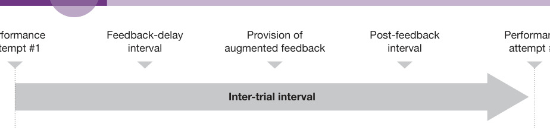

Lộn người (Walkover): www.youtube.com/watch?v=8F3gGwzFrlY&feature=plcp
Đối với mỗi clip, hãy xác định một lỗi thực hiện.
Đối với mỗi lỗi bạn đã xác định, hãy xây dựng một phát biểu phản hồi.
Phát biểu của bạn được phân loại là tri thức về kết quả hay tri thức về thực hiện?
Nội dung phát biểu của bạn mang tính miêu tả, chỉ dẫn, hay cả hai?
Hãy viết lại phát biểu của bạn bằng cách dùng cách tiếp cận “bánh sandwich”.
TẦN SUẤT PHẢN HỒI BỔ SUNG
Theo truyền thống, người ta từng cho rằng phản hồi bổ sung được cung cấp cho người học càng thường xuyên thì mức độ tiến bộ trong học tập càng lớn (Thorndike, 1931). Theo quan niệm này, một môi trường học tập tối ưu là môi trường trong đó người thực hành cung cấp cho người học phản hồi bổ sung sau mỗi lần thực hiện. Nghiên cứu đương đại bác bỏ nhận định này đã dẫn đến những ý tưởng mới về tần suất mà người thực hành nên cung cấp phản hồi bổ sung.
Giả Thuyết Hướng Dẫn
Theo giả thuyết hướng dẫn, phản hồi bổ sung có thể hướng dẫn người học trong việc sửa các lỗi thực hiện, nhưng việc cung cấp quá nhiều phản hồi có thể có tác động bất lợi đến tiếp thu kỹ năng (Salmoni, Schmidt, & Walter, 1984; Schmidt et al., 1989; Winstein & Schmidt, 1990; Winstein et al., 1994). Người ta cho rằng điều này xảy ra do người học phát triển sự phụ thuộc quá mức vào phản hồi ngoại tại. Một người học nhận phản hồi bổ sung với tần suất cao, chẳng hạn sau mỗi lần thử, sẽ bắt đầu dựa vào nó và từ bỏ việc xử lý các nguồn thông tin quan trọng khác, chẳng hạn như phản hồi nội tại. Thay vì tham gia tích cực vào quá trình học tập, người học có thể trở thành một người nghe thụ động và không phát triển được các kỹ năng giải quyết vấn đề giá trị vốn sẽ cần thiết trong những dịp tương lai khi không có phản hồi bổ sung. Ngược lại, việc cung cấp phản hồi bổ sung với tần suất tương đối thấp khuyến khích người học trở thành một người tư duy suy ngẫm và nâng cao việc học. Câu hỏi vẫn chưa được giải quyết là cần cung cấp chính xác bao nhiêu phản hồi bổ sung để tối ưu hóa việc học.
Một câu hỏi quan trọng khác là liệu việc giảm tần suất phản hồi có mang lại lợi ích cho học vận động ở trẻ em theo cách tương tự như ở người lớn hay không. Theo Sullivan, Kantak, và Burtner (2008), trẻ em sử dụng phản hồi khác với người lớn và có thể cần nhiều lần thử luyện tập có phản hồi hơn cũng như một lịch giảm tần suất dần dần hơn. Trong nghiên cứu của họ, 20 người trưởng thành trẻ (tuổi trung bình 25,6) và 20 trẻ em (tuổi trung bình 10,7) đã thực hiện một nhiệm vụ định vị tuyến tính và nhận phản hồi sau mỗi lần thử (100 phần trăm) hoặc theo lịch giảm dần (100 phần trăm trong buổi một, 75 phần trăm trong buổi hai, 50 phần trăm trong buổi ba, và 25 phần trăm trong buổi bốn). Trong khi kết quả bài kiểm tra duy trì của những người trưởng thành trẻ phù hợp với các tài liệu trước đó, trẻ em lại cho thấy kết quả ngược lại; những trẻ nhận phản hồi sau mỗi lần thử thực hiện nhiệm vụ chính xác và nhất quán hơn so với những trẻ nhận lịch phản hồi giảm dần. Các tác giả cho rằng phát hiện của họ phù hợp với khung điểm thử thách (Guadagnoli & Lee, 2004). Nói cách khác, lịch phản hồi giảm dần “đã vượt quá điểm thử thách tối ưu ở trẻ em và gợi ra một mức độ nỗ lực nhận thức làm quá tải khả năng xử lý thông tin của các em” (Sullivan et al., 2008, tr. 729). Lợi thế của tần suất phản hồi cao hơn ở trẻ em cũng đã được ghi nhận về độ chính xác ném túi đậu (Chiviacowsky, Wulf, de Medeiros, Kaefer, & Wally, 2008) và về học hình thức ném qua vai (Petranek, Bolter, & Bell, 2019). Dù cần thêm nghiên cứu trong lĩnh vực này, Sullivan et al. (2008) gợi ý rằng những người thực hành làm việc với trẻ em cần nhận biết nỗ lực nhận thức trong tiếp thu kỹ năng và điều chỉnh tần suất phản hồi cho phù hợp.
Các Chiến Lược Giảm Tần Suất Phản Hồi
Có một số chiến lược để giảm tần suất phản hồi một cách có hệ thống. Đó là các cách tiếp cận phản hồi mờ dần, theo dải, tóm tắt, trung bình và tự kiểm soát.
QUAN NIỆM SAI PHỔ BIẾN (COMMON MYTH)
Phản hồi bổ sung được cung cấp càng thường xuyên thì mức độ tiến bộ trong học tập càng lớn.
Phản Hồi Mờ Dần
Phản hồi mờ dần đã được chứng minh là một chiến lược giảm tần suất hiệu quả (Winstein & Schmidt, 1990). Trong phản hồi mờ dần, người học được cung cấp phản hồi với tần suất cao trong các giai đoạn đầu của quá trình học, nhằm tạo điều kiện cho sự hiểu biết và tiếp thu mô hình vận động cơ bản. Một khi người học đạt được mức thành thạo cơ bản, phản hồi bổ sung sẽ dần được rút lui. Lịch giảm tần suất phản hồi sẽ phụ thuộc vào sự tiến bộ của từng cá nhân.
Phản Hồi Theo Dải
Một kỹ thuật thúc đẩy các hoạt động xử lý thông tin quan trọng ở phía người học là phản hồi theo dải (Lai & Shea, 1999; Sherwood, 1988; Smith, Taylor, & Withers, 1997). Kỹ thuật này cũng dựa trên ý tưởng cung cấp nhiều thông tin hơn trong các giai đoạn đầu của quá trình học và giảm dần phản hồi khi người học tiến bộ. Trong phản hồi theo dải, một phạm vi “đúng” được xác định trước, và phản hồi bổ sung chỉ được cung cấp ở những lần thử mà lỗi nằm ngoài phạm vi đó. Chẳng hạn, trong môn phát bóng bóng chuyền, phạm vi đúng cho cú ném bóng có thể được xác định là nằm giữa vai và một điểm cách vai một bàn chân về phía trước. Nếu cú ném của người học nằm trong phạm vi này, không có phản hồi nào được đưa ra, cho thấy cú ném đó là chấp nhận được. Nếu cú ném nằm ngoài phạm vi, do quá xa về phía sau hoặc phía trước, người thực hành sẽ cung cấp cho người học thông tin để sửa lỗi. Lợi ích của cách tiếp cận này là phản hồi được giảm dần một cách có hệ thống theo mức độ thành thạo của người học. Bên cạnh đó, người học nhận được sự củng cố tích cực ở những lần thử thực sự nằm trong dải, điều này sẽ giúp củng cố hành vi dẫn đến kết quả đó.
Vickers và các cộng sự (ví dụ Vickers et al., 2004) đã xác định một vấn đề thú vị trong việc sử dụng phản hồi theo dải. Một số huấn luyện viên đang dùng kỹ thuật này báo cáo rằng họ đã gặp vấn đề giao tiếp với một số vận động viên, phụ huynh, thậm chí cả quản lý. Việc huấn luyện viên giảm lượng thông tin bị một số người hiểu là không giúp đỡ vận động viên, và một số vận động viên cảm thấy bị bỏ rơi hoặc bị phớt lờ (Chambers & Vickers, 2006). Trong nỗ lực giải quyết tình huống khó xử này, cũng như các vấn đề khác đã xác định, Chambers và Vickers (2006) đã kiểm tra hiệu quả của việc đặt câu hỏi cho vận động viên về thực hiện của họ khi tần suất phản hồi được giảm. Việc kết hợp phản hồi theo dải với đặt câu hỏi đã được chứng minh là hiệu quả trong việc cải thiện kỹ thuật bơi ở các vận động viên thi đấu. Chiến lược đặt câu hỏi sẽ được thảo luận chi tiết hơn sau trong chương này.
Phản Hồi Tóm Tắt
Phản hồi tóm tắt là một cách khác để tránh những tác động có hại tiềm ẩn của phản hồi bổ sung đối với việc học. Trong phản hồi tóm tắt, người thực hành cung cấp
GHI CHÚ NGHIÊN CỨU (RESEARCH NOTES)
Vì phản hồi theo dải dựa trên một phạm vi đúng, một câu hỏi đáng quan tâm là phạm vi đó nên rộng đến mức nào. Dùng nhiệm vụ ném bóng goalball, Shimony, Lidor, và Ziv (2020) đã kiểm tra tác động của dải rộng so với dải hẹp lên độ chính xác và tính nhất quán. Goalball là một môn thể thao đồng đội xâm lấn không lãnh thổ dành cho vận động viên khiếm thị (để tìm hiểu thêm, truy cập www.youtube.com/watch?v=0bZ51jzmbAQ ). Sau bài kiểm tra trước, 14 vận động viên goalball ưu tú đã thực hiện ba khối, mỗi khối mười cú ném về một mục tiêu. Phản hồi dưới dạng tri thức về kết quả được đưa ra dựa trên dải được phân nhóm, rộng hay hẹp. Phản hồi bằng lời chỉ được cung cấp nếu bóng rơi ngoài dải được gán và gồm thông tin về hướng (trái hay phải) cũng như khoảng cách tính bằng xăng-ti-mét từ các cạnh của mục tiêu. Người tham gia cũng được thông báo rằng cú ném của họ được xem là trúng nếu họ không nhận được phản hồi. Bảy mươi hai giờ sau buổi luyện tập, người tham gia thực hiện bài kiểm tra duy trì và bài kiểm tra chuyển giao trong đó góc ném được thay đổi. Không có khác biệt có ý nghĩa nào được tìm thấy về kích thước dải trong bài kiểm tra duy trì, nhưng nhóm dải rộng vượt trội nhóm dải hẹp trong bài kiểm tra chuyển giao. Dựa trên phát hiện của mình, các tác giả đề xuất dùng dải rộng phù hợp với nhu cầu của từng vận động viên.
bản tóm tắt về thực hiện sau khi người học hoàn thành một số lần thử nhất định. Chẳng hạn, trong môn nhảy ngăn, một con ngựa và người cưỡi phải vượt qua nhiều chướng ngại. Phản hồi bổ sung sẽ được giữ lại cho đến khi hoàn thành chuỗi cú nhảy. Sau đó, người học sẽ nhận phản hồi cụ thể về từng cú nhảy trong chuỗi. Một ví dụ khác về phản hồi tóm tắt là cho người học xem lại video về các lần thực hiện của mình sau một số lần thử nhất định. Với tác động tích cực của phản hồi tóm tắt đối với việc học (Schmidt et al., 1989), nghiên cứu đã chuyển sang xác định số lần thực hiện tối ưu cần được tóm tắt. Câu trả lời có thể là một hàm của độ phức tạp của nhiệm vụ (Schmidt, Lange, & Young, 1990; Swinnen, 1996).
Phản Hồi Trung Bình
Phản hồi trung bình là một chiến lược giảm phản hồi hiệu quả khác, tương tự như phản hồi tóm tắt. Trong phản hồi trung bình, người học nhận phản hồi bổ sung sau khi hoàn thành một số lần thử nhất định, như trong phản hồi tóm tắt. Tuy nhiên, phản hồi này sẽ đề cập đến lỗi thực hiện trung bình xảy ra trong chuỗi. Chẳng hạn, để hỗ trợ một bệnh nhân học cách đứng dậy khỏi ghế bằng khung tập đi, một nhà trị liệu thiết kế luyện tập trong đó bệnh nhân nhận phản hồi sau mỗi lần thử thứ năm. Dù nhà trị liệu nhận thấy một số lỗi trong các lần thử luyện tập, xu hướng phổ biến nhất của bệnh nhân là kéo lên vào khung tập đi khi đứng dậy. Phản hồi sẽ chỉ đề cập đến lỗi này.
Đối với người thực hành, phản hồi trung bình có một số ưu điểm so với phản hồi tóm tắt. Thứ nhất, nó loại bỏ nhu cầu kể lại từng lỗi được quan sát. Thứ hai, nó buộc người thực hành tập trung phân tích để khám phá những lỗi thực sự trong thực hiện và bỏ qua tính biến thiên thực hiện thỉnh thoảng. Cuối cùng, nó giảm khả năng làm người học bị quá tải với quá nhiều thông tin.
Phản Hồi Tự Kiểm Soát
Trong phản hồi tự kiểm soát, thay vì người thực hành quyết định khi nào đưa phản hồi, người học chọn thời điểm phản hồi được đưa ra và chỉ khi đó mới nhận nó. Ngoài việc vừa giảm vừa cá nhân hóa tần suất phản hồi (Carter, Rathwell, & Ste-Marie, 2016), chiến lược này lôi kéo người học tham gia tích cực vào quá trình học và được nhiều nghiên cứu ủng hộ, những nghiên cứu đã chỉ ra rằng việc cho người học lựa chọn lịch phản hồi của mình dẫn đến khả năng duy trì tốt hơn so với phản hồi do người thực hành kiểm soát truyền thống (xem Sanli et al., 2013, để có bài tổng quan).
Hai giải thích đã được đề xuất để giải thích các tác động có lợi của phản hồi tự kiểm soát. Thứ nhất, giải thích về xử lý thông tin dựa trên một số nghiên cứu đã báo cáo rằng người học dựa trên thực hiện của mình để yêu cầu phản hồi và dùng thông tin đó vừa để xác nhận thành công vừa để sửa lỗi (Post et al., 2016). Điều này gợi ý rằng phản hồi tự kiểm soát làm tăng sự tham gia của người học vào việc xử lý phản hồi nội tại và phản hồi bổ sung, một quan điểm đã được nhiều nghiên cứu ủng hộ (ví dụ Barros et al., 2019; Carter et al., 2016; Carter & Ste-Marie, 2017; Figueiredo et al., 2018; Grand et al., 2015). Vậy tại sao người học lại chọn yêu cầu phản hồi vào thời điểm họ làm vậy? Trong hầu hết các trường hợp, người học thể hiện sự ưu tiên nhận phản hồi sau những lần thử được cảm nhận là tốt (ví dụ Chiviacowsky, 2014; Chiviacowsky & Wulf, 2002; Januário et al., 2019; McRae, Patterson, & Hansen, 2015; Patterson & Carter, 2010), dù một số nghiên cứu ghi nhận quyết định yêu cầu phản hồi sau cả lần thử tốt lẫn lần thử kém (Aiken et al., 2012; Laughlin et al., 2015; Post et al., 2016). Sự khác biệt này có thể là một hàm của thông tin do phản hồi cung cấp (ví dụ tri thức về kết quả so với tri thức về thực hiện) và cách sử dụng thông tin đó sau này (ví dụ xác nhận thành công so với sửa lỗi), nhưng cần thêm nghiên cứu để kiểm tra khả năng này. Dù sao đi nữa, Carter, Carlsen, và Ste-Marie (2014), những người mở rộng công trình của Chiviacowsky và Wulf (2005), chỉ ra rằng “yếu tố then chốt dẫn đến tăng cường học tập dường như là cơ hội được quyết định sau khi thực hiện vận động
CEREBRAL CHALLENGE 12.6 — Thử thách Trí não
Quay lại Hoạt động Khám phá 12.1. Khi người thực hiện được cho xem các dấu bút chì cho từng lần thử sau khi hoàn thành tất cả mười lần thử, đó là phản hồi tóm tắt. Bạn sẽ thiết kế lại thí nghiệm như thế nào để cung cấp phản hồi theo dải? Bạn sẽ thiết kế lại thí nghiệm như thế nào để cung cấp phản hồi trung bình?
liệu họ có muốn phản hồi hay không,” ủng hộ quan điểm rằng những lợi thế học tập của phản hồi tự kiểm soát phụ thuộc vào thực hiện (tr. 7).
Theo Chiviacowsky, Wulf, và Lewthwaite (2012), sự ưu tiên của người học tự kiểm soát trong việc nhận phản hồi chủ yếu sau những lần thử thành công, như đã thấy trong một số nghiên cứu nêu trên, có thể “phản ánh biểu hiện của một nhu cầu tâm lý cơ bản về năng lực hoặc sự thấu hiểu của người tham gia rằng việc học của họ tốt hơn khi trải nghiệm thành công hoặc một yếu tố tương quan như cảm nhận hiệu quả bản thân” (tr. 6). Giải thích thay thế này về lợi ích của phản hồi tự kiểm soát cho rằng quyền tự chủ có ảnh hưởng về mặt động lực đối với việc học—một ý tưởng cũng được ủng hộ bởi thuyết OPTIMAL do Wulf và Lewthwaite (2016) đề xuất và được thảo luận trong Chương 7. Những phát hiện về cảm nhận năng lực và hiệu quả bản thân cao hơn trong một số nghiên cứu ủng hộ quan điểm này (Badami, VaezMousavi, et al., 2011; Chiviacowsky et al., 2012; Chiviacowsky, 2014).
Carter et al. (2016) cung cấp thêm những hiểu biết về sự ưu tiên của người tham gia trong việc yêu cầu phản hồi. Trong nghiên cứu của mình, họ hỏi người tham gia về chiến lược yêu cầu tri thức về kết quả trong nửa đầu và nửa sau của luyện tập. Chiến lược phổ biến được viện dẫn trong nửa đầu luyện tập là “thiết lập một đường cơ sở về hiểu biết”, trong khi có sự chuyển sang “xác nhận một lần thử được cảm nhận là ‘tốt’” trong nửa sau luyện tập. Nói cách khác, người học dùng phản hồi cho những mục đích khác nhau tùy thuộc vào việc họ đang ở giai đoạn đầu hay cuối của luyện tập. Dù cần thêm nghiên cứu để hiểu đầy đủ lý do người học yêu cầu phản hồi vào thời điểm họ làm vậy, bằng chứng hiện tại gợi ý rằng người thực hành nên cân nhắc việc trao cho người học quyền kiểm soát lịch phản hồi của họ, chỉ cung cấp thông tin khi được yêu cầu.
THỜI ĐIỂM CỦA PHẢN HỒI BỔ SUNG
Việc trình bày phản hồi bổ sung có thể được chia thành ba khoảng thời gian, như minh họa trong Hình 12.4. Khoảng thời gian từ khi kết thúc một lần thực hiện đến khi bắt đầu lần thực hiện tiếp theo được gọi là khoảng giữa các lần thử. Khoảng này lại được chia nhỏ thành khoảng trễ phản hồi, tức thời gian từ khi kết thúc một lần thực hiện cho đến khi phản hồi bổ sung được cung cấp, và khoảng sau phản hồi, tức thời gian từ lúc cung cấp phản hồi bổ sung đến khi khởi động lần thực hiện tiếp theo.

Hình 12.4: Mô hình thời gian trình bày phản hồi bổ sung
LẦN THỰC HIỆN #1. KHOẢNG TRỄ PHẢN HỒI. CUNG CẤP PHẢN HỒI BỔ SUNG. KHOẢNG SAU PHẢN HỒI. LẦN THỰC HIỆN #2. KHOẢNG GIỮA CÁC LẦN THỬ.
Phần sau đây xem xét hai khoảng con này, vì độ dài và bản chất của hoạt động diễn ra trong chúng đều ảnh hưởng đến hiệu quả của phản hồi liên quan đến thực hiện.
Khoảng Trễ Phản Hồi
Một hiểu lầm về thời điểm của phản hồi bổ sung là phản hồi nên được cung cấp cho người học ngay sau một lần thực hiện. Trái lại, nghiên cứu đã chứng minh rằng việc cung cấp phản hồi bổ sung ngay lập tức có thể có tác động tiêu cực đến việc học (Swinnen et al., 1990). Khi phản hồi bổ sung được cung cấp quá sớm, người học bị ngăn cản không thể đánh giá phản hồi nội tại do đáp án tạo ra, cản trở sự phát triển cơ chế phát hiện và sửa lỗi. Trong nghiên cứu ủng hộ quan điểm này, Anderson et al. (2005) nhận thấy rằng những người học nhận tri thức về kết quả trễ đã dùng nhiều nguồn phản hồi nội tại hơn và đa dạng hơn so với những người nhận tri thức về kết quả ngay sau mỗi lần thử.
Vậy người thực hành nên đợi bao lâu trước khi cung cấp phản hồi?
QUAN NIỆM SAI PHỔ BIẾN (COMMON MYTH)
Phản hồi bổ sung nên được cung cấp cho người học ngay sau lần thực hiện.
Dường như người học chỉ cần đủ thời gian, thường là vài giây, để xử lý phản hồi do chính chuyển động của mình tạo ra. Việc trì hoãn cung cấp phản hồi lâu hơn dường như không gây ảnh hưởng bất lợi cho việc học, dù rằng một khoảng trễ kéo dài có thể khiến người học quên mất chi tiết của lần luyện tập.
Việc nhắc người học ước tính các lỗi thực hiện của chính mình trước khi người thực hành cung cấp phản hồi bổ sung cũng đã được chứng minh là có lợi cho việc học ở cả người lớn (Barros et al., 2019; Guadagnoli & Kohl, 2001; Liu & Wrisberg, 1997; Swinnen et al., 1990) lẫn trẻ em (Silva, Pereira-Monfredini, & Teixeira, 2017). Theo đó, Chen (2001) khuyến nghị người thực hành giúp người học phát triển kỹ năng tự đánh giá bằng cách đặt câu hỏi trong lúc luyện tập để gợi ra sự suy ngẫm về các lần thử của họ. Chẳng hạn, một người thực hành có thể hỏi người học: “Động tác kết thúc (follow-through) của bạn lần đó thế nào?” hay “Bạn nghĩ tại sao quả bóng lại đi lệch sang trái?” Vũ công ở đầu chương, người cho rằng cô thấy khung chậu của mình đã thẳng hàng, có thể được nhắc giải thích làm thế nào cô đi đến kết luận đó. Như đã nêu trước đó, Chambers và Vickers (2006) ủng hộ chiến lược này, nhận thấy tác động tích cực lên thực hiện khi dùng phản hồi theo dải kết hợp với chiến lược đặt câu hỏi. Họ cho rằng “đặt câu hỏi cung cấp cho huấn luyện viên một phương pháp khuyến khích học tập tích cực thông qua giải quyết vấn đề, khám phá và nhận thức về thực hiện” (tr. 187).
Ban đầu, người học có thể gặp khó khăn trong việc trả lời những câu hỏi như vậy. Tự đánh giá là một năng lực cần được phát triển. Người thực hành có thể hướng dẫn người học đi qua quá trình này bằng cách đặt những câu hỏi tiếp theo cụ thể hơn dẫn người học đến câu trả lời. Chẳng hạn, một câu hỏi phụ về động tác kết thúc của một cầu thủ có thể là: “Bạn có nghĩ cánh tay của mình đi thẳng xuống, hay nó đã cắt ngang cơ thể bạn?” Cuối cùng, các tương tác giữa người thực hành và người học sẽ
trở thành sự trao đổi ý tưởng thay vì sự chuyển giao thông tin một chiều, và người học sẽ phát triển các năng lực giải quyết vấn đề cần thiết cho việc tiếp thu kỹ năng và nâng cao thực hiện hơn nữa.
Khoảng Sau Phản Hồi
Trong khoảng sau phản hồi, người học tổng hợp thông tin nhận được từ bên trong lẫn bên ngoài (thông qua phản hồi bổ sung) và hình thành một kế hoạch vận động mới. Một lần nữa, người học cần có đủ thời gian để xử lý và lập kế hoạch. Vì những hoạt động này phụ thuộc vào độ phức tạp của kỹ năng, độ dài của khoảng sau phản hồi sẽ thay đổi tương ứng.
Trong một số trường hợp, người học có thể cần được nhắc nhở tham gia vào các hoạt động xử lý. Bằng cách hỏi người học họ đang nghĩ gì về lần thử sắp tới, người thực hành vừa có thể khuyến khích xử lý tích cực nhằm điều chỉnh vận động, vừa kiểm tra sự hiểu biết. Người thực hành có thể bảo đảm hơn nữa rằng người học hiểu bằng cách quan sát mức độ phản hồi bổ sung đã giúp người học điều chỉnh đáp án tiếp theo như thế nào.
THAO TÁC CÁC RÀNG BUỘC CỦA NHIỆM VỤ
Dù có xu hướng dựa vào việc cung cấp phản hồi để sửa lỗi, hãy nhớ lại từ Chương 8 rằng các mô hình vận động cũng có thể được định hình bằng cách thao tác các biến số của nhiệm vụ và/hoặc luyện tập. Chẳng hạn, để sửa một cú nhảy vào kém trong môn nhảy xuống nước, hãy đặt một ống bọt xốp ở độ cao cẳng chân và hướng dẫn người học nhảy qua nó mà không chạm vào. Người học sẽ bản năng đẩy mạnh hơn khi rời thành bể, từ đó sửa được lỗi. Để cải thiện độ dài sải chân trong huấn luyện lại dáng đi, hãy dùng các đố nhựa (poly spot) hoặc mục tiêu đặt ở những khoảng cách mong muốn. Khi nhịp của kiểu bơi ếch bị ảnh hưởng do giai đoạn lướt ngắn lại, hãy cho người học chuyển một vật (như kính bơi) từ tay này sang tay kia trước khi bắt đầu cú quạt tiếp theo. Hành động bổ sung này sẽ gợi ra hành vi mong muốn. Một lỗi thường gặp khi thực hiện cú chip trong golf là đánh bóng từ dưới lên trong nỗ lực đưa bóng lên không trung. Một chiến lược can thiệp hiệu quả để sửa lỗi này là đặt một bao bọc đầu gậy driver cách quả bóng khoảng 12 inch và hướng dẫn người học tăng tốc mặt gậy về phía đó khi thực hiện cú đánh (Owens & Bunker, 1995). Chạy các quãng nghỉ trong khi cầm một miếng khoai tây chiên ở mỗi tay mà không làm nó vỡ có thể sửa được tư thế chạy căng và kém hiệu quả. Cuối cùng, hãy truy cập www.youtube.com/watch?v=t0KKKIkDkYk để xem một hoạt động cải thiện cú lắc cổ tay trong môn squash theo cách tiếp cận “hands-off” (không dùng vợt).
CEREBRAL CHALLENGE 12.7 — Thử thách Trí não
Hãy tự lập một danh sách kiểm tra để cung cấp phản hồi bổ sung dựa trên thông tin được trình bày trong chương này.
Nhà vật lý trị liệu đã thêm nhiều hoạt động bước xuống khác nhau vào chương trình phục hồi của Darren (các độ cao, hướng và bề mặt tiếp đất khác nhau, có hoặc không có ba lô, v.v.). Dù Darren có thể thực hiện các động tác, cô nhận thấy anh luôn nhìn xuống, quan sát từng bước. Đây là một lỗi thường gặp khi cảm giác tự thân bị suy giảm.
Kiểm Tra Kiến Thức Của Bạn
Hãy thiết kế một hoạt động can thiệp thao tác các ràng buộc của nhiệm vụ để giúp Darren rời mắt khỏi bàn chân và nhìn thẳng về phía trước. So sánh câu trả lời của bạn với câu trả lời mẫu tại www.routledge.com/cw/coker.
HƯỚNG NHÌN PHÍA TRƯỚC
Thông qua phản hồi bổ sung, người thực hành có thể hướng dẫn, tạo động lực và củng cố người học nhằm nâng cao tiếp thu kỹ năng và thực hiện. Hiệu quả của phản hồi phụ thuộc vào nhiều biến số, gồm loại, nguồn, nội dung, tần suất và thời điểm của phản hồi. Tuy nhiên, phản hồi không phải là chiến lược can thiệp duy nhất có thể dùng để sửa lỗi thực hiện. Bằng cách thao tác các ràng buộc của nhiệm vụ, người thực hành cũng có thể gợi ra những sửa chữa về kỹ thuật và chiến thuật.
Cuốn sách này đã giới thiệu cho bạn các quá trình chi phối việc tiếp thu và kiểm soát vận động. Bằng cách hiểu các khái niệm và nguyên lý được trình bày ở đây, cũng như các ứng dụng của chúng, bạn có thể nhìn về những thách thức tương lai với sự tự tin rằng mình sẽ đưa ra được những quyết định hướng dẫn hiệu quả nhằm tối đa hóa tiềm năng của khách hàng, bệnh nhân, học sinh hay vận động viên.
TRỌNG TÂM CẦN NHỚ
Sau khi đọc chương này, bạn nên biết:
“Phản hồi” là thuật ngữ chung dùng để mô tả thông tin người học nhận được về thực hiện của một vận động hay kỹ năng.
Phản hồi có thể là nội tại, đến từ hệ thống cảm giác của chính cá nhân, hoặc bổ sung, do một nguồn ngoại tại cung cấp.
Tri thức về kết quả cung cấp thông tin liên quan đến kết quả của một đáp án và quan tâm đến mức độ thành công của hành động dự kiến so với mục tiêu của nó.
Tri thức về thực hiện cung cấp thông tin liên quan đến các đặc điểm cụ thể của thực hiện đã dẫn đến kết quả.
Phản hồi bổ sung có chức năng cung cấp thông tin để sửa lỗi, tạo động lực và củng cố.
Ngoài mô tả bằng lời và trình diễn mẫu, các nguồn phản hồi bổ sung gồm phản hồi thính giác, màn hình thị giác, phát lại video, thiết bị và bài tập, cùng phản hồi sinh học (biofeedback).
Trong cách tiếp cận “bánh sandwich”, người thực hành trước tiên đưa cho người học thông tin để củng cố thực hiện đúng, sau đó cung cấp thông tin về sửa lỗi, và cuối cùng đưa ra lời khuyến khích để thúc đẩy người học áp dụng các đề xuất.
Việc cung cấp cả thông tin miêu tả lẫn thông tin chỉ dẫn có thể giúp người học hình thành mối liên hệ giữa các lỗi và cách sửa chúng.
Người học cần phản hồi bổ sung với tần suất cao trong giai đoạn đầu của quá trình học. Tuy nhiên, trừ khi tần suất đó được giảm dần khi người học trở nên thành thạo hơn, người học có thể phát triển sự phụ thuộc quá mức vào người thực hành.
Để giảm tần suất phản hồi, người thực hành có thể dùng phản hồi mờ dần, theo dải, tóm tắt, trung bình và phản hồi do người học điều chỉnh.
Người học cần thời gian để xử lý phản hồi nội tại và hình thành một kế hoạch vận động mới cho lần thử tiếp theo.
Việc nhắc người học ước tính các lỗi thực hiện của chính mình trước khi cung cấp phản hồi bổ sung có thể tạo thuận lợi cho việc học.
Nên cân nhắc thao tác có chủ đích các biến số then chốt của nhiệm vụ và/hoặc luyện tập khi sửa lỗi thực hiện.
Thực hành trong phòng thí nghiệm: Để hoàn thành bài thực hành cho chương này, hãy truy cập www.routledge.com/cw/coker và chọn Lab 12, Tri Thức Về Kết Quả.
CÂU HỎI ÔN TẬP
Hãy định nghĩa các thuật ngữ sau:
phản hồi
phản hồi nội tại
phản hồi bổ sung
tri thức về kết quả
tri thức về thực hiện
Hãy so sánh và đối chiếu phản hồi cuối (terminal feedback) và phản hồi đồng thời (concurrent feedback).
Hãy xây dựng một sơ đồ dòng chảy để biểu diễn tất cả các loại và loại con của phản hồi.
Hãy so sánh và đối chiếu củng cố tích cực và củng cố tiêu cực.
Phản hồi có thể đảm nhiệm ba chức năng nào?
Hãy nêu tên bốn giai đoạn của học phản hồi video và đặc điểm của từng giai đoạn.
Hãy so sánh và đối chiếu:
phản hồi dựa trên lỗi và phản hồi sửa lỗi
phản hồi miêu tả và phản hồi chỉ dẫn
Ý nghĩa của giả thuyết hướng dẫn là gì?
Người thực hành có thể dùng những chiến lược nào để giảm tần suất phản hồi bổ sung?
Khoảng giữa các lần thử có thể được chia thành hai khoảng bổ sung. Hãy nêu tên và định nghĩa chúng.
Tiếp Ngôn: Các Tình Huống Giảng Dạy
Tiếp ngôn — DOI: 10.4324/9781003039716-13
Hiệu quả của bạn với tư cách là người thực hành sẽ phụ thuộc vào khả năng tích hợp nhiều khái niệm và nguyên lý của học vận động và kiểm soát vận động. Sau đây là hai tình huống và các câu hỏi tương ứng được thiết kế để cung cấp cho bạn cơ hội áp dụng những gì bạn đã học trong cuốn sách này. Hãy nhớ cân nhắc người học, nhiệm vụ và môi trường mà nhiệm vụ được thực hiện trong mọi trường hợp.
CÁC TÌNH HUỐNG
Giáo Dục Thể Chất
Trong khuôn khổ chuẩn bị nghề nghiệp của bạn, bạn phải hoàn thành một số lần quan sát một lớp giáo dục thể chất tại trường trung học cơ sở địa phương. Bạn quyết định quan sát một lớp tám gồm cả nam và nữ vừa bắt đầu một học phần về bóng đá. Có 30 học sinh trong lớp, gồm Chris và Morgan. Kinh nghiệm vận động của Chris còn hạn chế và chủ yếu được tích lũy qua các tiết giáo dục thể chất. Morgan thì lại rất năng động, đã chơi bóng chày, bóng chày mềm và bóng rổ, đồng thời chạy điền kinh.
Câu Hỏi 1.1
Trong lần quan sát đầu tiên, giáo viên giới thiệu kỹ thuật rê bóng. Sau mô tả và trình diễn mẫu ban đầu, học sinh được ghép thành từng cặp để làm một bài tập. Trong bài tập này, một học sinh rê bóng sang phía bên kia phòng tập trong khi bạn mình cố giành lấy bóng. Giáo viên nhấn mạnh rằng mục tiêu của bài tập là rê bóng mà không nhìn vào bóng. Khi bài tập tiến triển, giáo viên nhận thấy tất cả học sinh hoặc là mất bóng, hoặc là dồn toàn bộ thị giác vào bóng.
Hãy giải thích tại sao đây không phải là một bài tập hiệu quả.
Hãy đề xuất một bài tập thay thế sẽ hiệu quả hơn cho nhóm người học này, và đưa ra lý do đầy đủ cho đề xuất của bạn.
Câu Hỏi 1.2
Khi bạn đến quan sát vào ngày hôm sau, bạn nhận thấy không có đủ bóng đá cho mọi người. Hóa ra huấn luyện viên bóng đá đã mượn một số quả bóng và vẫn chưa trả lại. Để mọi người đều có bóng cho bài học về đường chuyền, giáo viên đã quyết định thay thế những quả bóng đá bị thiếu bằng bóng sân chơi có kích thước tương tự.
Hãy đánh giá những lợi ích và bất lợi tiềm ẩn của chiến lược này.
Dựa trên đánh giá của bạn, bạn có đồng ý hay không đồng ý với việc dùng bóng sân chơi trong tình huống này? Hãy biện minh cho câu trả lời của bạn.
Câu Hỏi 1.3
Kỹ năng tiếp theo được giới thiệu cho lớp là kỹ năng chặn bóng (trapping).
Nếu bạn đang dạy kỹ năng này, bạn sẽ dùng phương pháp nào, chia nhỏ (part) hay toàn bộ (whole)?
Bạn đã cân nhắc những yếu tố nào khi đưa ra quyết định? Hãy giải thích đầy đủ câu trả lời của bạn.
Câu Hỏi 1.4
Khi dạy kỹ năng chặn bóng, giáo viên có nhắc đến việc đệm hoặc hấp thụ bóng như cách bạn làm khi bắt một quả bóng chày mềm hay bóng chày.
Giáo viên đang dùng chiến lược nào để cố gắng tạo điều kiện cho người học hiểu khái niệm này?
Gợi ý này có hiệu quả như nhau đối với Chris và Morgan không? Tại sao có hoặc tại sao không?
Câu Hỏi 1.5
Bạn sẽ đề xuất dùng phương pháp nào, phân đoạn (segmentation) hay đơn giản hóa (simplification), để dạy người học kỹ năng đánh đầu trong bóng đá? Hãy bảo vệ lựa chọn của bạn.
Hãy phác thảo cách bạn sẽ thiết kế trải nghiệm học tập bằng phương pháp bạn đã chọn.
Câu Hỏi 1.6
Hãy thiết kế một bài tập kết hợp cả luyện tập ngẫu nhiên và luyện tập biến đổi để giúp người học tinh chỉnh các kỹ năng rê, chặn và chuyền bóng.
Việc kết hợp luyện tập ngẫu nhiên và biến đổi có hiệu quả như nhau đối với Chris và Morgan không? Hãy giải thích.
Câu Hỏi 1.7
Chris đang gặp khó khăn trong việc chuyền bóng và giáo viên đi đến giúp. Sau khi phân tích các lần thử của Chris, giáo viên đưa ra phản hồi ngoại tại sau: “Không, không phải vậy. Con quá căng. Sao con căng thế? Đầu con không thẳng và con không sút xuyên qua tâm quả bóng—trách gì bóng không đi thẳng! Con không làm tốt hơn được sao?”
Hãy viết lại phát biểu này để cung cấp cho Chris phản hồi hiệu quả hơn.
Hãy giải thích tại sao phiên bản của bạn hiệu quả hơn.
Câu Hỏi 1.8
Chris đã tiến bộ rất xa trong luyện tập và đã khá thành thạo trong việc sút bóng. Tuy nhiên, mỗi khi bóng được chuyền gần khung thành, hậu vệ lại cướp bóng trước khi Chris kịp sút. Giáo viên quyết định rằng kỹ thuật sút của Chris ổn, nhưng Chris mất quá nhiều thời gian để phản ứng với bóng.
Hãy liệt kê những lý do có thể khiến Chris không phản ứng nhanh được trong tình huống này.
Hãy đưa ra gợi ý cho từng lý do đã nêu để sửa vấn đề.
Phục Hồi Chức Năng
Bạn vừa mới bắt đầu làm việc tại một phòng khám phục hồi chức năng. Một trong những ca đầu tiên của bạn là một bệnh nhân đã cắt cụt chân dưới đầu gối (BKA) ở chân trái. Bệnh nhân đã được lắp chân giả và sẵn sàng bắt đầu huấn luyện thăng bằng, luyện tập các kỹ thuật di chuyển (ví dụ, lên xe hơi) và huấn luyện dáng đi.
Câu Hỏi 2.1
Những tác động tâm lý đi kèm với việc cắt cụt một chi là yếu tố đáng kể cần cân nhắc trong quá trình phục hồi của bệnh nhân. Chẳng hạn, mức độ động lực của bệnh nhân sẽ ảnh hưởng trực tiếp đến quá trình học. Khi bệnh nhân không tiến triển nhanh như kỳ vọng, sự bực bội có thể dẫn đến mất động lực. Bạn sẽ dùng những chiến lược nào để tạo động lực cho bệnh nhân trong suốt quá trình phục hồi?
Câu Hỏi 2.2
Mối lo ngại lớn của bệnh nhân, vốn thường gặp ở những người đang học dùng chân giả chi dưới, là nỗi sợ ngã.
Bạn dự kiến mức độ hưng phấn nào sẽ đi kèm với nỗi sợ ngã?
Điều đó có thể ảnh hưởng thế nào đến việc huấn luyện của bệnh nhân? Đến việc thực hiện các hoạt động sinh hoạt hằng ngày?
Bạn sẽ đưa những chiến lược nào vào chương trình phục hồi của bệnh nhân để giảm nỗi sợ ngã?
Câu Hỏi 2.3
Hãy mô tả cách bạn có thể đưa việc đặt mục tiêu vào quá trình phục hồi cho bệnh nhân này. Hãy gồm một ví dụ về mục tiêu có thể phù hợp trong tình huống này.
Câu Hỏi 2.4
Việc mất cảm giác tự thân khiến bệnh nhân cắt cụt dưới đầu gối (BKA) gặp khó khăn trong việc học cân bằng độ dài sải chân. Bạn có thể dùng những cơ chế phản hồi thay thế nào để bù đắp cho cảm giác tự thân đã mất của bệnh nhân?
Câu Hỏi 2.5
Để thiết kế những trải nghiệm luyện tập biến đổi hiệu quả, người thực hành phải đánh giá bản chất của kỹ năng và các bối cảnh mà kỹ năng sẽ được thực hiện. Hãy liệt kê các biến thể nên được đưa vào huấn luyện chân giả cho:
học cách ngã an toàn;
di chuyển (ví dụ, lên xe hơi);
dáng đi (cả trong nhà và ngoài trời).
ĐÁP ÁN
Tình Huống Giáo Dục Thể Chất
Câu Hỏi 1.1
Đây không phải là một bài tập hiệu quả vì một số lý do. Thứ nhất, mục tiêu học tập do giáo viên nêu ra—rê bóng mà không nhìn vào bóng—là quá cao. Vì học sinh mới chỉ nhận được giải thích và trình diễn mẫu ban đầu, hầu hết các em sẽ ở giai đoạn nhận thức của quá trình học. Do đó, các em nên được cho cơ hội luyện tập kỹ năng để phát triển sự hiểu biết cơ bản về vận động. Một khi người học đã hình thành một mức thành thạo nhất định trong rê bóng, bước tiếp theo sẽ là học cách rê bóng mà không nhìn vào bóng.
Thứ hai, bài tập không nhắm vào mục tiêu học tập. Theo hướng dẫn của giáo viên, mục tiêu của bài tập là rê bóng sang phía bên kia phòng tập mà không nhìn vào bóng. Với một hậu vệ đứng trước người rê bóng, mục tiêu của bài tập đối với người học trở thành bảo vệ bóng.
Thứ ba, với một hậu vệ đứng trước người học có nhiệm vụ giành lấy bóng, bối cảnh thực hiện kỹ năng trở nên mở và do đó phức tạp hơn. Vì người học đang ở giai đoạn nhận thức, nhu cầu chú ý cho việc tạo ra vận động rất cao. Nhu cầu bổ sung do hậu vệ áp đặt vượt quá năng lực chú ý của người học, gây ra nhiễu. Kết quả là hoặc mức độ thực hiện suy giảm, hoặc một trong các nhiệm vụ bị bỏ qua. Điều này thể hiện rõ ở việc người học hoặc là mất quyền kiểm soát bóng, hoặc là dồn toàn bộ thị giác vào bóng.
Câu Hỏi 1.2
Có hai yếu tố cần cân nhắc ở đây. Lợi ích của việc dùng bóng sân chơi là sẽ làm tăng lượng thời gian dành cho nhiệm vụ. Câu hỏi người thực hành phải đặt ra trước khi áp dụng chiến lược này là liệu việc dùng bóng sân chơi có khiến người học thực hiện một mô hình vận động vượt quá ranh giới của chương trình vận động tổng quát đang được hình thành hay không. Miễn rằng những thay đổi rõ rệt về mô hình vận động không biểu hiện do việc dùng thiết bị thay thế, đây là một chiến lược tốt.
Câu Hỏi 1.3
Vì kỹ năng có mức độ tổ chức nhiệm vụ cao và độ phức tạp nhiệm vụ thấp, nên luyện tập toàn bộ được khuyến nghị.
Câu Hỏi 1.4
Việc giáo viên nhắc đến đệm bóng như cách bạn làm khi bắt bóng chày mềm hay bóng chày là một ví dụ về nỗ lực tận dụng chuyển giao tích cực. Bất cứ khi nào bạn cố tận dụng chuyển giao, điều quan trọng là phải bảo đảm rằng kỹ năng hay khái niệm bạn viện dẫn đã được học kỹ. Với kinh nghiệm quá khứ của Morgan về bóng chày và bóng chày mềm, lời nhắc đó có khả năng hiệu quả. Đối với Chris, người có kinh nghiệm vận động hạn chế, lời nhắc sẽ không có ý nghĩa và ý tưởng giáo viên muốn truyền đạt sẽ không được chuyển tải hiệu quả.
Câu Hỏi 1.5
Một lần nữa, người thực hành phải đánh giá mức độ tổ chức nhiệm vụ và độ phức tạp nhiệm vụ để xác định nên dùng phương pháp nào, phân đoạn hay đơn giản hóa. Thứ nhất, kỹ năng được xem là có mức độ tổ chức nhiệm vụ tương đối cao. Thứ hai, vì đánh đầu đòi hỏi người học phải căn chỉnh thời gian hành động của mình với quả bóng đang bay tới, vận động này có độ phức tạp nhất định. Tuy nhiên, độ phức tạp đó có thể dễ dàng được giảm. Luyện tập có thể bắt đầu bằng việc mỗi người học dán một miếng băng keo nhỏ lên giữa trán. Sau đó, dùng những quả bóng nhẹ hơn như bóng bãi biển, người học ném bóng lên không và cố chạm vào bóng bằng điểm băng keo trên trán. Khi đã thành thạo, họ có thể chuyển sang bóng cứng hơn một chút như bóng chuyền hoặc bóng sân chơi, và cuối cùng là bóng đá. Bên cạnh đó, luyện tập có thể tiến triển từ tự ném sang bạn ném giúp. Các cú ném ban đầu nên dễ đoán và ở khoảng cách gần, rồi dần dần xa hơn và khó đoán hơn.
Câu Hỏi 1.6
Một người bạn rê bóng dọc sân rồi chuyền cho người bạn kia, người này chặn bóng và rê tiếp trước khi chuyền lại cho người bạn đầu tiên. Các biến thể về khoảng cách, tốc độ, chân dùng, loại đường chuyền, kiểu chặn bóng, v.v. sẽ được đưa vào.
Mức độ nhiễu bối cảnh cao có thể gây quá tải nếu người học vẫn đang cố hình thành sự hiểu biết về vận động. Với kinh nghiệm quá khứ của Morgan và Chris, có khả năng Morgan tiến triển nhanh hơn trong quá trình học và đã sẵn sàng xử lý một bài tập như thế này, trong khi Chris thì chưa. Câu trả lời phụ thuộc vào mức độ thành thạo của người học tại thời điểm bài tập được giới thiệu.
Câu Hỏi 1.7
Cách tiếp cận “bánh sandwich” sẽ hiệu quả hơn trong tình huống này. Dùng chiến lược này, một phiên bản hiệu quả hơn sẽ là: “Tốt lắm! Cú chạm bóng của con mạnh hơn nhiều. Ở lần thử tới, hãy tập trung sút xuyên qua tâm quả bóng. Như vậy bóng sẽ đi thẳng. Chúng ta thử lại nhé. Con gần đúng rồi.”
Phiên bản này hiệu quả hơn vì nó xác nhận sự tiến bộ của người học, khuyến khích sự kiên trì tiếp tục và đưa ra phản hồi chỉ dẫn, vốn có lợi hơn cho người học mới bắt đầu.
Câu Hỏi 1.8
Lỗi trong tình huống này là sự chậm trễ trong đáp trả. Nhiều lý do có thể gây ra sự chậm trễ này. Thứ nhất, người thực hành phải xác định liệu Chris có đọc đúng các tình huống thi đấu hay không. Chris có biết những tín hiệu then chốt cần tìm kiếm không? Chris có phát hiện được thông tin đó trong một trận đấu không? Nếu không, các chiến lược can thiệp nên tập trung vào việc dạy Chris các tín hiệu then chốt là gì, nhắc Chris chuẩn bị đáp án sớm hơn, hướng sự chú ý của Chris tới nơi trong môi trường các tín hiệu xuất hiện, và cung cấp nhiều cơ hội luyện tập trong nhiều tình huống khác nhau có chứa các tín hiệu liên quan phổ biến đến nhiệm vụ. Thứ hai, tiêu điểm chú ý của Chris có thể quá rộng hoặc quá hẹp, tùy vào mức độ hưng phấn. Thứ ba, sự chậm trễ trong đáp trả có thể do vấn đề ra quyết định. Việc giảm số lượng đáp án lựa chọn và tăng khả năng nhận diện các yếu tố dự báo tiềm ẩn, chẳng hạn như xu hướng của đối thủ hoặc của tình huống, có thể giải quyết được vấn đề.
Tình Huống Phục Hồi Chức Năng
Câu Hỏi 2.1
Trong suốt quá trình học, bệnh nhân phải có cơ hội trải nghiệm một mức độ thành công nhất định. Điều này sẽ tạo ra cảm giác thành đạt, từ đó thúc đẩy người học luyện tập thêm. Bệnh nhân cũng cần được dạy rằng thách thức là một phần không thể thiếu của quá trình học. Phản hồi tích cực và việc cung cấp sự khích lệ cùng củng cố là rất quan trọng. Sự đơn điệu của luyện tập lặp đi lặp lại có thể được giảm nếu nhà trị liệu làm cho việc luyện tập trở nên vui vẻ và đưa sự đa dạng vào phác đồ huấn luyện khi có thể. Một kỹ thuật tạo động lực mạnh mẽ khác là đặt mục tiêu. Kỹ thuật này sẽ được thảo luận trong phần trả lời Câu hỏi 2.3.
Câu Hỏi 2.2
Người ta có thể kỳ vọng nỗi sợ ngã dẫn đến mức độ lo âu cao, gây ra mức độ hưng phấn cao. Nỗi sợ ngã rõ ràng sẽ ảnh hưởng đến động lực thực hiện các hoạt động khác nhau của bệnh nhân. Hơn nữa, bệnh nhân có khả năng biểu lộ sự phụ thuộc quá mức vào chi không bị ảnh hưởng.
Khi bệnh nhân tiến triển, mức độ hưng phấn cao sẽ ảnh hưởng đến tiêu điểm chú ý của cô ấy, và thực hiện các hoạt động trong môi trường mở hơn có khả năng bị suy giảm (ví dụ, đi qua đám đông). Để giảm nỗi sợ và sự lo âu sau đó của bệnh nhân, người thực hành không chỉ phải dạy cô ấy cách ngã an toàn (theo cách giảm thiểu nguy cơ chấn thương) mà còn phải dạy phải làm gì trong trường hợp ngã. Các bài tập thăng bằng và phối hợp củng cố tư thế tốt nên được đưa vào các giai đoạn đầu của phác đồ phục hồi.
Câu Hỏi 2.3
Người thực hành nên thực hiện một số bước để đưa việc đặt mục tiêu vào quá trình phục hồi. Thứ nhất, người thực hành và bệnh nhân nên đặt sự kết hợp của các mục tiêu ngắn hạn, dài hạn, thực hiện và quá trình. Những mục tiêu đó nên đạt chuẩn SMART: cụ thể, đo lường được, định hướng hành động, thực tế và kịp thời. Bệnh nhân nên được tham gia vào quá trình đặt mục tiêu và được khuyến khích đánh giá tiến bộ thường xuyên. Cuối cùng, người thực hành phải luôn ủng hộ và cung cấp sự củng cố tích cực trong suốt quá trình phục hồi.
Một ví dụ về mục tiêu có thể phù hợp trong tình huống này là: “Thực hiện một lần di chuyển độc lập và an toàn sang giường, với sự hỗ trợ sẵn của nhà trị liệu, 8 trong 10 lần, vào cuối tuần thứ hai.”
Câu Hỏi 2.4
Để giúp bệnh nhân hình thành một khung tham chiếu cho các hoạt động khác nhau, người thực hành nên tạo cơ hội trải nghiệm nhiều tư thế và vận động trong nhiều môi trường đa dạng. Người thực hành nên hướng sự chú ý của bệnh nhân vào cảm giác liên quan đến một vận động để giúp bệnh nhân nhận ra và giải thích các tín hiệu cảm giác tự thân nhận được từ các nguồn khác. Bên cạnh đó, người thực hành nên giúp bệnh nhân phát triển kỹ năng tự đánh giá bằng cách đặt câu hỏi trong lúc luyện tập nhằm gợi ra sự suy ngẫm của bệnh nhân về các lần thử. Thông tin về vận động và vị trí cơ thể cũng có thể có được thông qua phản hồi thị giác. Các cơ chế phản hồi thay thế khác có thể gồm phản hồi sinh học (ví dụ, thiết bị theo dõi tải trọng), gương và phát lại video.
Câu Hỏi 2.5
Thao tác độ cao và vị trí. (Lưu ý: An toàn là ưu tiên hàng đầu.)
Thao tác địa điểm di chuyển tới. Ví dụ gồm giường, xe lăn, bồn cầu, bồn tắm, vòi sen, sàn nhà, xe hơi và nhiều loại nội thất khác.
Thao tác bề mặt (nhẵn, thô, có thảm, không bằng phẳng); huấn luyện trên cầu thang, dốc, bó vỉa, thang máy và thang cuốn; đi lại và di chuyển ở những nơi chật hẹp và trong đám đông; luyện tập mở cửa, bước qua chướng ngại vật, v.v.
BẢNG THUẬT NGỮ
Năng lực (Ability) — Đặc điểm di truyền là điều kiện tiên quyết cho sự phát triển mức độ thành thạo của kỹ năng.
Nhiệm vụ nhắm mục tiêu trừu tượng (Abstract targeting task) — Nhiệm vụ có một mục tiêu cố định trong không gian nhưng vị trí nhắm tối ưu lại khó phát hiện hơn.
Hướng tâm (Afferent) — Theo nghĩa đen, mang đến; mô tả phần của hệ thần kinh ngoại biên (PNS) phát hiện những thay đổi trong môi trường và dẫn các xung thần kinh từ các thụ thể cảm giác về hệ thần kinh trung ương (CNS).
Sự mời gọi hành động (Affordances) — Những khả năng hành động của môi trường và nhiệm vụ liên quan đến năng lực của chính người tri giác.
Hệ thống ngoại vi (Ambient system) — Hệ thống thị giác hoạt động ở mức độ dưới ý thức và được cho là chịu trách nhiệm về định vị và định hướng không gian.
Dự báo (Anticipation) — Việc dự đoán sự kiện nào sẽ xảy ra hoặc thời điểm một sự kiện sẽ xảy ra.
Lo âu (Anxiety) — Cảm xúc phát sinh từ việc cá nhân cảm nhận một tình huống là có tính đe dọa.
Mức độ hưng phấn (Arousal) — “Một sự kích hoạt chung về sinh lý và tâm lý của cơ thể, thay đổi theo một dải liên tục từ giấc ngủ sâu đến sự phấn khích mãnh liệt” (Gould & Krane, 1992).
Giai đoạn liên kết (Associative stage) — Giai đoạn trung gian của quá trình học trong mô hình của Fitts và Posner.
Gợi ý chú ý (Attention cueing) — Kỹ thuật luyện tập trong đó người học hướng chú ý đến một khía cạnh cụ thể của kỹ năng trong lúc thực hiện kỹ năng đó như một toàn thể.
Tiêu điểm chú ý (Attentional focus) — Quá trình chú ý có chọn lọc đến thông tin cụ thể của môi trường.
Trạng thái hút (Attractor state) — Trạng thái ổn định hay mô hình ưu tiên mà một hệ thống tự phát chuyển về phía đó.
Phản hồi bổ sung (Augmented feedback) — Thông tin nhận được từ một nguồn ngoại tại bổ sung cho thông tin cảm giác của chính người học.
Tính tự động (Automaticity) — Năng lực thực hiện một kỹ năng với rất ít hoặc không có sự kiểm soát có ý thức.
Giai đoạn tự chủ (Autonomous stage) — Giai đoạn cao nhất hay cuối cùng của quá trình học trong mô hình của Fitts và Posner.
Phản hồi trung bình (Average feedback) — Phản hồi bổ sung, được cung cấp sau khi hoàn thành một số lần thử nhất định, về lỗi thực hiện trung bình.
Chuỗi ngược (Backward chaining) — Kỹ thuật luyện tập một phần trong đó các thành phần của kỹ năng được trình bày và luyện tập theo trình tự tiến từ thành phần cuối cùng về thành phần đầu tiên.
Phản hồi theo dải (Bandwidth feedback) — Phản hồi bổ sung trong đó phản hồi chỉ được cung cấp ở những lần thử mà lỗi nằm ngoài một phạm vi đúng được xác định trước.
Chuyển giao hai chi (Bilateral transfer) — Việc luyện tập với một chi làm tăng tốc độ tiếp thu kỹ năng với chi đối bên cùng một nhiệm vụ.
Phản hồi sinh học (Biofeedback) — Một dạng phản hồi bổ sung trong đó thông tin sinh lý được cung cấp đồng thời cho người học.
Luyện tập theo khối (Blocked practice) — Lịch luyện tập trong đó người học lặp đi lặp lại một biến thể của kỹ năng rồi mới chuyển sang biến thể khác.
Người điều hành trung ương (Central executive) — Thành phần của trí nhớ làm việc kiểm soát dòng thông tin giữa vòng lặp âm vị và bảng phác thảo thị giác-không gian, điều hòa việc xử lý thông tin và quản lý các hoạt động chú ý.
Vỏ não (Cerebral cortex) — Lớp ngoài cùng của đại não.
Thời gian phản ứng lựa chọn (Choice RT) — Thời gian phản ứng phát sinh từ một tình huống có liên quan đến lựa chọn về cách đáp trả.
Kỹ năng đóng (Closed skill) — Kỹ năng được thực hiện trong môi trường ổn định và có thể dự đoán, cho phép người thực hiện kiểm soát tình huống thực hiện.
Kiểm soát vòng kín (Closed-loop control) — Chế độ kiểm soát trong đó phản hồi hỗ trợ phát hiện và sửa lỗi.
Giai đoạn nhận thức (Cognitive stage) — Giai đoạn đầu hay giai đoạn khởi đầu của quá trình học trong mô hình của Fitts và Posner.
Phản hồi đồng thời (Concurrent feedback) — Phản hồi bổ sung được cung cấp trong lúc thực hiện kỹ năng.
Ràng buộc (Constraint) — Ranh giới có ảnh hưởng đến năng lực vận động của một cá nhân.
Tiếp cận dựa trên ràng buộc (Constraint-led approach) — Mô hình học kỹ năng trong đó người hướng dẫn đóng vai trò người tạo điều kiện, xác định và thao tác các ràng buộc nhằm tạo thuận lợi cho tiếp thu kỹ năng.
Thông tin bối cảnh (Contextual information) — Tập hợp các hoàn cảnh hay sự kiện bao quanh một sự kiện hoặc tình huống cụ thể.
Nhiễu bối cảnh (Contextual interference) — Sự nhiễu phát sinh từ việc chuyển từ kỹ năng này sang kỹ năng khác hoặc thay đổi bối cảnh luyện tập một nhiệm vụ từ lần thử này sang lần thử khác.
Hiệu ứng nhiễu bối cảnh (Contextual interference effect) — Nhiễu bối cảnh thấp thường tạo ra thực hiện ngắn hạn tốt hơn trong lúc luyện tập, nhưng nhiễu bối cảnh cao dẫn đến mức độ tiến bộ học tập dài hạn lớn hơn.
Kỹ năng liên tục (Continuous skill) — Kỹ năng mà điểm bắt đầu và điểm kết thúc là tùy ý hoặc do một yếu tố môi trường quyết định thay vì do chính nhiệm vụ quyết định.
Kiểm soát (Control) — Việc thao tác các biến số trong một vận động nhằm đáp ứng yêu cầu của một tình huống nhất định.
Tham số kiểm soát (Control parameters) — Các biến số đưa hệ thống vào những trạng thái hút mới.
Phối hợp (Coordination) — Quá trình tổ chức các bậc tự do sẵn có của một hệ thống thành một mô hình vận động hiệu quả nhằm đạt được mục tiêu một cách có hiệu quả.
Tái bản đồ vỏ não (Cortical remapping) — Sự tổ chức lại một hay nhiều vùng ở vỏ não dẫn đến một bản đồ vỏ não mới.
Đặc điểm then chốt (Critical features) — Những vận động cụ thể của cơ thể có thể quan sát được và ảnh hưởng đến thực hiện của một kỹ năng.
Giả thuyết sử dụng tín hiệu (Cue utilization hypothesis) — Mô hình trong đó những thay đổi về tiêu điểm chú ý xảy ra theo mức độ hưng phấn.
Mất đầu vào cảm giác (Deafferentation) — Sự mất đầu vào cảm giác do gián đoạn hoặc phá hủy các dây thần kinh cảm giác của một hay nhiều chi. Tình trạng này được tạo ra bằng phẫu thuật trong các thí nghiệm trên động vật để phản hồi do đáp án tạo ra không thể đến được hệ thần kinh trung ương.
Lừa dối (Deception) — Việc cố ý trình bày các tín hiệu báo trước sai nhằm gợi ra một đáp án không đúng.
Tri thức tường minh (Declarative knowledge) — Thông tin được dùng để quyết định phải làm gì trong một tình huống nhất định.
Trí nhớ tường minh (Declarative memory) — Phần trí nhớ của chúng ta dùng cho sự kiện hay dữ kiện; thường được chia thành hai loại: trí nhớ tình tiết và trí nhớ ngữ nghĩa.
Bậc tự do (Degrees of freedom) — Những yếu tố vận động độc lập phải được tổ chức để tạo ra một mô hình vận động được kiểm soát.
Vấn đề bậc tự do (Degrees of freedom problem) — Vấn đề về cách chúng ta phối hợp và kiểm soát các bậc tự do sẵn có để tạo ra một vận động cụ thể.
Phản hồi miêu tả (Descriptive feedback) — Phản hồi bổ sung trong đó người thực hành mô tả bản chất của lỗi thực hiện.
Kỹ năng rời rạc (Discrete skill) — Kỹ năng có điểm bắt đầu và điểm kết thúc được xác định rõ ràng.
Ngụy trang (Disguise) — Nỗ lực của một cầu thủ nhằm che giấu hoặc trì hoãn sự xuất hiện của các tín hiệu báo trước về hành động dự kiến để kéo dài thời gian ra quyết định của đối thủ.
Luyện tập phân bổ (Distributed practice) — Lịch luyện tập trong đó thành phần nghỉ giữa các buổi hay các lần thử bằng hoặc lớn hơn thành phần luyện tập.
Cách tiếp cận sinh thái (Ecological approach) — Mô hình tri giác trong đó người tri giác giải thích môi trường và các nhiệm vụ trực tiếp theo các sự mời gọi hành động.
H ly tâm (Efferent) — Theo nghĩa đen, mang đi từ; mô tả phần của hệ thần kinh ngoại biên truyền các xung đi từ hệ thần kinh trung ương đến các cơ quan hiệu ứng.
Trí nhớ tình tiết (Episodic memory) — Trí nhớ về những trải nghiệm và sự kiện cá nhân gắn với một thời điểm và bối cảnh cụ thể.
Học không lỗi (Errorless learning) — Chiến lược học tiềm ẩn trong đó số lỗi mắc phải trong luyện tập được giảm có chủ đích bằng cách cho người học ban đầu thực hiện các nhiệm vụ đơn giản, rồi tăng dần độ khó.
Dự báo sự kiện (Event anticipation) — Dự đoán sự kiện nào sẽ xảy ra.
Học tường minh (Explicit learning) — Tri thức thu được thông qua những giải thích bằng lời tường minh.
Tiêu điểm ngoại vi (External focus) — Việc hướng chú ý vào các tác động của chính hành động của một người.
Thụ thể ngoại cảm (Exteroceptors) — Các thụ thể nằm ở hoặc gần bề mặt cơ thể, phát hiện các kích thích bên ngoài cơ thể và cung cấp thông tin về môi trường.
Phản hồi mờ dần (Faded feedback) — Kỹ thuật phản hồi trong đó người học ban đầu được cung cấp phản hồi với tần suất cao, sau đó phản hồi được rút dần.
Khoảng trễ phản hồi (Feedback-delay interval) — Khoảng thời gian từ lúc kết thúc một lần thực hiện cho đến khi phản hồi bổ sung được cung cấp.
Đầu vào trước (Feedforward) — Mô tả việc gửi thông tin trước một vận động nhằm chuẩn bị hoặc điều chỉnh vận động từ trước.
Kỹ năng vận động tinh (Fine motor skill) — Kỹ năng vận động liên quan đến những vận động rất chính xác, thường được thực hiện bằng các nhóm cơ nhỏ hơn.
Cố thị (Fixation) — Việc hướng sự chú ý thị giác vào một vật thể cụ thể.
Cố thị/Đa dạng hóa (Fixation/Diversification) — Giai đoạn thứ hai và cuối cùng của quá trình học trong mô hình của Gentile.
Mục tiêu cố định (Fixed target) — Mục tiêu ổn định và có thể dự đoán về vị trí, đòi hỏi người thực hiện phải cố thị vào một vị trí cụ thể trước khi thực hiện đáp án.
Hệ thống tiêu (Focal system) — Hệ thống thị giác có chức năng nhận diện các vật thể chủ yếu nằm ở vùng trung tâm của trường thị giác.
Giai đoạn báo hiệu (Foreperiod) — Khoảng thời gian giữa việc đưa ra tín hiệu cảnh báo và kích thích mà tín hiệu đó báo trước.
Chuỗi xuôi (Forward chaining) — Kỹ thuật luyện tập một phần trong đó các thành phần của kỹ năng được trình bày và luyện tập theo trình tự tiến từ thành phần đầu tiên về thành phần cuối cùng.
Tách nhỏ (Fractionization) — Kỹ thuật luyện tập một phần trong đó các thành phần của kỹ năng thường được thực hiện đồng thời được tách ra và luyện tập độc lập.
Đóng băng các bậc tự do (Freezing the degrees of freedom) — Chiến lược trong đó người học đóng băng hoặc cố định các khả năng vận động của một khớp, khiến chi hoặc các chi hoạt động như một đơn vị hay một đoạn duy nhất, nhằm đạt được mục tiêu của một nhiệm vụ.
Mô hình vận động chức năng (Functional movement pattern) — Mô hình vận động sẽ thực hiện được một mục tiêu nhiệm vụ cụ thể.
Chương trình vận động tổng quát (Generalized motor program) — Một biểu diễn trừu tượng của một lớp hành động hay mô hình vận động có thể được điều chỉnh để tạo ra các kết quả đáp án khác nhau.
Giai đoạn nắm bắt ý tưởng vận động (Getting the idea of the movement stage) — Giai đoạn học đầu tiên trong mô hình của Gentile, đặc trưng bởi việc người học cố gắng phát triển sự hiểu biết về các yêu cầu của vận động.
Cơ quan gân Golgi (Golgi tendon organs) — Các thụ thể tự thân nằm tại điểm nối giữa gân và cơ, cho biết mức độ phát triển sức căng trong gân.
Kỹ năng vận động thô (Gross motor skill) — Kỹ năng vận động ít nhấn mạnh vào độ chính xác và thường là kết quả của các vận động nhiều chi.
Khám phá có hướng dẫn (Guided discovery) — Kỹ thuật học trong đó người thực hành đặt ra một chuỗi câu hỏi, mỗi câu gợi ra một đáp án đúng duy nhất do người học tự khám phá.
Người thực hành “buông tay” (Hands-off practitioner) — Vai trò được xác định lại của người thực hành như một người tạo điều kiện, xác định và điều chỉnh các ràng buộc then chốt để hướng dẫn người học tìm kiếm các giải pháp vận động tối ưu.
Định luật Hick (Hick’s Law) — Mức độ không chắc chắn trong một tình huống càng cao thì thời gian cần để quyết định đáp án cần thực hiện càng dài; thời gian phản ứng lựa chọn (RT) có liên hệ logarithm với số lượng lựa chọn đáp án.
Hình dung tinh thần (Imagery) — Việc hình dung hoặc diễn tập nhận thức về một vận động khi không có bất kỳ thực hiện thể chất nào.
Học tiềm ẩn (Implicit learning) — Tri thức thu được mà không có nhận thức có ý thức.
Khác biệt cá nhân (Individual differences) — Các đặc điểm tương đối ổn định và bền bỉ làm cho mỗi người chúng ta trở nên độc nhất.
Xử lý thông tin (Information processing) — Mô hình tri giác trong đó người thực hiện nhận một lượng thông tin dồi dào, tập trung vào các kích thích liên quan, chọn một đáp án và nhận phản hồi nội tại về kết quả của đáp án.
Tiêu điểm nội tại (Internal focus) — Việc hướng chú ý vào chính các vận động của cơ thể mình.
Nơ-ron trung gian (Interneuron) — Tế bào thần kinh nằm giữa nơ-ron cảm giác và nơ-ron vận động trong một cung phản xạ.
Thụ thể nội tạng (Interoceptors) — Các thụ thể phát hiện các kích thích từ các tạng bên trong và cung cấp thông tin về môi trường nội tại.
Khoảng giữa các lần thử (Inter-trial interval) — Khoảng thời gian từ khi kết thúc một lần thực hiện đến khi bắt đầu lần thực hiện tiếp theo.
Phản hồi nội tại (Intrinsic feedback) — Thông tin do đáp án tạo ra, sẵn có cho người học từ hệ thống cảm giác của họ trong suốt và như hệ quả của việc thực hiện.
Đặc điểm bất biến (Invariant features) — Các đặc điểm nền tảng tương đối cố định xác định một chương trình vận động.
Nguyên tắc chữ U ngược (Inverted-U principle) — Mối quan hệ giữa mức độ hưng phấn và hiệu suất trong đó tồn tại một mức hưng phấn tối ưu cho hiệu suất đỉnh cao.
Hiệu ứng mỉa mai (Ironic effects) — Hiện tượng trong đó hành động mà một cá nhân đang cố tránh lại thực sự được thực hiện.
Thụ thể cảm giác vận động khớp (Joint kinesthetic receptors) — Các thụ thể nằm trong và quanh các khớp hoạt dịch, đáp ứng với áp lực, gia tốc và giảm tốc, và sức căng quá mức lên khớp.
Yếu tố then chốt (Key elements) — Các vận động cụ thể của cơ thể có thể quan sát được và ảnh hưởng đến việc thực hiện một kỹ năng.
Động học (Kinematic) — Mô tả về chuyển động.
Tri thức về thực hiện (Knowledge of performance) — Phản hồi bổ sung cung cấp thông tin về các đặc điểm cụ thể của việc thực hiện đã dẫn đến kết quả.
Tri thức về kết quả (Knowledge of results) — Phản hồi bổ sung cung cấp cho người học thông tin về kết quả của một đáp án và quan tâm đến mức độ thành công của hành động dự định so với mục tiêu.
Học tập (Learning) — Một sự thay đổi tương đối bền vững trong khả năng thực hiện kỹ năng vận động của một người, là kết quả của luyện tập hoặc kinh nghiệm.
Năng lực chú ý hạn chế (Limited attentional capacity) — Một giới hạn về lượng thông tin mà một người có thể xử lý hoặc chú ý đến.
Trí nhớ dài hạn (Long-term memory) — Trí nhớ được đặc trưng là có dung lượng và thời gian duy trì dường như không giới hạn.
Nhắm mục tiêu bằng tay (Manual aiming) — Hành động với tới hoặc đưa tay đến một vị trí mục tiêu.
Dẫn dắt bằng tay (Manual guidance) — Việc di chuyển cơ thể người học một cách thể chất qua vận động mục tiêu.
Luyện tập dồn (Massed practice) — Lịch luyện tập trong đó lượng thời gian dành cho nghỉ giữa các buổi hoặc các lần thử ít hơn tương đối so với thời gian người học đang luyện tập.
Trí nhớ (Memory) — Khả năng lưu trữ và nhớ lại thông tin.
Nơ-ron gương (Mirror neurons) — Các tế bào thần kinh bắn cả khi chúng ta thực hiện một hành động lẫn khi chúng ta xem người khác thực hiện cùng hành động đó.
Quan sát hỗn hợp (Mixed observation) — Việc quan sát cả mô hình người mới học và mô hình chuyên gia, so với chỉ một mô hình lành nghề hoặc không lành nghề.
Động lực (Motivation) — Một trạng thái bên trong thúc đẩy và định hướng hành động hay hành vi.
Kiểm soát vận động (Motor control) — Nghiên cứu về các khía cạnh thần kinh, thể chất và hành vi làm nền tảng cho vận động của con người.
Học vận động (Motor learning) — Nghiên cứu về các quá trình liên quan đến việc tiếp thu và tinh chỉnh các kỹ năng vận động, cũng như các biến số thúc đẩy hoặc cản trở việc tiếp thu đó.
Chương trình vận động (Motor program) — Một biểu diễn trừu tượng của một kế hoạch vận động, được lưu trong trí nhớ, chứa tất cả các lệnh vận động cần thiết để thực hiện hành động dự định.
Kỹ năng vận động (Motor skill) — Một hành động hay nhiệm vụ hướng đến mục tiêu đòi hỏi vận động tự nguyện của cơ thể và/hoặc các chi và phải được học.
Khái niệm vận động (Movement concepts) — Mô tả cách một kỹ năng cần được thực hiện.
Thời gian vận động (Movement time) — Khoảng thời gian giữa lúc bắt đầu một vận động và lúc vận động đó hoàn thành.
Nhiệm vụ mục tiêu di động (Moving target task) — Nhiệm vụ đòi hỏi người thực hiện phải dự báo vị trí sắp tới của mục tiêu.
Thoi cơ (Muscle spindles) — Các thụ thể tự thân nằm giữa các sợi cơ xương trong bụng cơ, cho biết mức độ và tốc độ thay đổi chiều dài của cơ.
Chuyển giao tiêu cực (Negative transfer) — Việc học một kỹ năng mới hoặc thực hiện nó trong điều kiện mới bị ảnh hưởng tiêu cực bởi kinh nghiệm trước đó với một hay nhiều kỹ năng khác.
Tính dẻo thần kinh (Neural plasticity) — Khả năng của não thay đổi tổ chức và, cuối cùng, chức năng của nó trong suốt cuộc đời.
Sư phạm phi tuyến (Non-linear pedagogy) — Một cách tiếp cận lý thuyết đối với luyện tập dựa trên vai trò tương tác của các ràng buộc trong việc định hình hành vi vận động.
Kiểm soát vòng mở (Open-loop control) — Một chế độ kiểm soát trong đó một kế hoạch hành động được tạo ra chứa tất cả thông tin cần thiết để hoàn thành một đáp án.
Kỹ năng mở (Open skill) — Kỹ năng vận động được thực hiện trong một môi trường không thể đoán trước và luôn thay đổi.
Giao thoa thị giác (Optic chiasm) — Điểm mà tại đó một số sợi từ mỗi dây thần kinh thị giác bắt chéo, cho phép tín hiệu thị giác được xử lý bởi phía đối diện của não.
Dòng chảy quang học (Optic flow) — Chuyển động thị giác được cảm nhận của các vật thể khi người quan sát di chuyển so với chúng.
Mục tiêu kết quả (Outcome goals) — Các mục tiêu quan tâm đến kết quả cuối cùng của một cuộc thi so với đối thủ.
Thông số (Parameters) — Các đặc điểm linh hoạt xác định cách thực hiện một chương trình vận động tổng quát.
Phương pháp luyện tập theo phần (Part practice method) — Chiến lược giảng dạy trong đó người hướng dẫn chia kỹ năng thành các phần hay đoạn tự nhiên và người học luyện tập các phần đó riêng biệt cho đến khi thuần thục, rồi tích hợp chúng để thực hiện toàn bộ kỹ năng.
Tri giác (Perception) — Quá trình mà nghĩa được gán cho thông tin.
Không gian làm việc tri giác–vận động (Perceptual-motor workspace) — Các nguồn thông tin tri giác của cá nhân và phạm vi khả năng vận động cho một nhiệm vụ cụ thể.
Thu hẹp tri giác (Perceptual narrowing) — Sự thu hẹp của tiêu điểm chú ý khi mức độ hưng phấn tăng lên.
Hiệu suất (Performance) — Hành động thực hiện một kỹ năng.
Mục tiêu hiệu suất (Performance goals) — Các mục tiêu quan tâm đến sự tự cải thiện.
Đường bằng hiệu suất (Performance plateau) — Một giai đoạn trong quá trình học mà tại đó không có thay đổi rõ rệt nào về hiệu suất xảy ra.
Chuyển pha (Phase shift) — Sự thay đổi trạng thái ổn định của một hệ thống gây ra sự tổ chức lại tự phát thành một hình thức mới.
Vòng lặp ngữ âm (Phonological loop) — Hệ thống trí nhớ chịu trách nhiệm lưu trữ ngắn hạn tài liệu nói và viết.
Tế bào cảm quang (Photoreceptors) — Các tế bào nhạy sáng nằm ở mắt.
Chuyển giao tích cực (Positive transfer) — Việc học một kỹ năng mới hoặc thực hiện nó trong điều kiện mới được ảnh hưởng tích cực bởi kinh nghiệm trước đó với một hay nhiều kỹ năng khác.
Khoảng sau phản hồi (Post-feedback interval) — Thời gian từ lúc cung cấp phản hồi bổ sung đến lúc bắt đầu lần thực hiện tiếp theo.
Bài kiểm tra sau luyện tập (Post-test) — Bài kiểm tra thực hiện kỹ năng được tiến hành ngay sau một giai đoạn luyện tập, dùng để xác định người học có thể làm được gì sau khi luyện tập một kỹ năng.
Định luật lũy thừa của luyện tập (Power law of practice) — Khi học một kỹ năng mới, thường có sự cải thiện lớn ban đầu về hiệu suất, sau đó chậm lại trong các giai đoạn luyện tập về sau (Newell & Rosenbloom, 1981).
Tín hiệu báo trước (Precue) — Các manh mối trong môi trường có thể giúp người thực hiện dự báo.
Tiếp cận và nắm (Prehension) — Hành động với tới và nắm lấy.
Phản hồi chỉ dẫn (Prescriptive feedback) — Phản hồi bổ sung trong đó người thực hành đưa ra một gợi ý về cách sửa một vấn đề thực hiện.
Nhiễu chủ động (Proactive interference) — Sự nhiễu của các trí nhớ cũ đối với việc duy trì các trí nhớ mới.
Tri thức thủ tục (Procedural knowledge) — Thông tin liên quan đến các kỹ năng, thao tác và hành động.
Trí nhớ thủ tục (Procedural memory) — Trí nhớ về cách thực hiện các kỹ năng và hành động khác nhau.
Đánh giá quá trình (Process assessment) — Các khía cạnh cụ thể của việc thực hiện kỹ năng.
Mục tiêu quá trình (Process goals) — Các mục tiêu hướng tiêu điểm của người thực hiện đến việc đạt được một yếu tố kỹ thuật nào đó trong lúc thực hiện kỹ năng.
Đánh giá sản phẩm (Product assessment) — Kết quả của việc thực hiện.
Cảm giác tự thân (Proprioception) — Dòng thông tin cảm giác liên tục được nhận từ các thụ thể nằm ở cơ, gân, khớp và tai trong liên quan đến vận động và vị trí của cơ thể.
Thụ thể tự thân (Proprioceptors) — Các thụ thể cung cấp thông tin về vị trí và vận động của cơ thể bằng cách phát hiện những thay đổi về sức căng cơ, vị trí khớp và thăng bằng.
Thời gian không chế tâm lý (Psychological refractory period (PRP)) — Sự chậm trễ trong việc đáp án với kích thích thứ hai trong tình huống mà hai kích thích, mỗi kích thích đòi hỏi một đáp án khác nhau, được trình bày liên tiếp trong một khoảng thời gian ngắn.
Mắt lặng (Quiet eye) — Điểm cố thị cuối cùng hướng vào một mục tiêu hay vật thể cụ thể trước khi bắt đầu vận động.
Luyện tập ngẫu nhiên (Random practice) — Lịch luyện tập trong đó người học thực hiện nhiều biến thể của nhiệm vụ theo một thứ tự ngẫu nhiên.
Yếu tố giới hạn tốc độ (Rate limiters) — Các ràng buộc cản trở hoặc hạn chế khả năng thay đổi của một hệ thống.
Thời gian phản ứng (Reaction time) — Khoảng thời gian giữa lúc một kích thích được trình bày và lúc một đáp án được bắt đầu.
Phản xạ (Reflex) — Một đáp án tự động, không tự nguyện đối với các kích thích.
Cung phản xạ (Reflex arc) — Đường dẫn đơn giản nhất mà qua đó một phản xạ xảy ra.
Điều kiện điều chỉnh (Regulatory conditions) — Các yếu tố môi trường xác định các đặc điểm vận động cần thiết để thực hiện thành công một kỹ năng.
Lực tương đối (Relative force) — Khái niệm rằng khi lực tổng thể dùng để thực hiện một vận động thay đổi, đặc điểm lực thực tế của từng thành phần nên thay đổi theo tỷ lệ tương ứng.
Luyện tập theo khối lặp lại (Repeated blocked practice) — Một hình thức luyện tập tuần tự trong đó một trình tự cố định các khối lần thử luyện tập được lặp lại.
Thời gian đáp án (Response time) — Khoảng thời gian từ lúc một kích thích được trình bày đến lúc đáp án hoàn thành (kết hợp của RT và MT).
Bài kiểm tra duy trì (Retention test) — Bài kiểm tra thực hiện kỹ năng được tiến hành sau một giai đoạn không luyện tập, đo lường mức độ bền bỉ của hiệu suất kỹ năng đã được cải thiện.
Nhiễu hồi tố (Retroactive interference) — Sự nhiễu của việc học mới đối với việc duy trì các trí nhớ cũ hơn.
Lược đồ (Schema) — Một quy tắc hay mối quan hệ định hướng việc ra quyết định khi người học đối mặt với một vấn đề vận động.
Phân đoạn (Segmentation) — Kỹ thuật luyện tập một phần trong đó kỹ năng được tách thành các phần theo yếu tố không gian hoặc thời gian.
Chú ý chọn lọc (Selective attention) — Khả năng chú ý hay tập trung vào một mục cụ thể giữa vô số kích thích.
Tự kiểm soát (Self-control) — Việc trao cho người học quyền kiểm soát để lựa chọn một số đặc điểm của tình huống học.
Phản hồi tự kiểm soát (Self-controlled feedback) — Phản hồi bổ sung chỉ được cung cấp cho người học khi người đó yêu cầu.
Tự tổ chức (Self-organization) — Sự nổi lên tự phát của một mô hình vận động như kết quả của sự tương tác giữa các ràng buộc sinh thể, môi trường và nhiệm vụ luôn thay đổi đặt lên người học.
Tự thoại (Self-talk) — Các tín hiệu gợi ý do người học dùng để tự dẫn dắt mình qua một hành động hay một trình tự vận động.
Trí nhớ ngữ nghĩa (Semantic memory) — Trí nhớ về tri thức chung được phát triển qua các trải nghiệm nhưng không gắn với thời gian.
Trí nhớ cảm giác (Sensory memory) — Hệ thống trí nhớ giữ lại một ấn tượng ngắn ngủi về một kích thích cảm giác sau khi kích thích ban đầu đã kết thúc, cho phép xác định xem nó có cần thêm sự chú ý hay không.
Luyện tập tuần tự (Serial practice) — Sự lặp lại của một trình tự cố định các lần thử luyện tập.
Kỹ năng chuỗi (Serial skill) — Kỹ năng vận động được cấu thành từ một số kỹ năng rời rạc, trong đó việc thực hiện tích hợp có ý nghĩa quyết định cho việc đạt được mục tiêu.
Đơn giản hóa (Simplification) — Kỹ thuật luyện tập một phần trong đó mức độ khó của nhiệm vụ hay một khía cạnh nào đó của nhiệm vụ được giảm bớt.
Giả thuyết đặc thù (Specificity hypothesis) — Giả thuyết rằng các cá nhân thừa hưởng một số lượng lớn các năng lực vận động, và sự thừa hưởng của mỗi năng lực độc lập với các năng lực khác.
Sự đánh đổi tốc độ–độ chính xác (Speed–accuracy tradeoff) — Thực tế rằng việc nhấn mạnh tốc độ trong thực hiện ảnh hưởng tiêu cực đến độ chính xác và ngược lại.
Cố thị (Spotting) — Việc cố định sự chú ý thị giác vào một điểm cụ thể trong lúc cơ thể xoay, nhằm giảm chóng mặt và giữ phương hướng.
Kích thích (Stimulus) — Một sự thay đổi trong môi trường gợi ra một đáp án.
Tương thích kích thích–đáp án (Stimulus–response compatibility) — Mức độ mà một kích thích và đáp án tương ứng có liên hệ tự nhiên với nhau.
Phản hồi tóm tắt (Summary feedback) — Phản hồi bổ sung trong đó người thực hành cung cấp cho người học một bản tóm tắt về việc thực hiện sau khi một số lần thử nhất định đã hoàn thành.
Phân tích nhiệm vụ (Task analysis) — Việc chia một kỹ năng thành các thành phần cấu thành và các năng lực nền tảng tương ứng.
Tau (Tau) — Biến số quang học cung cấp thông tin “thời gian đến lúc chạm” bằng cách lấy kích thước của hình ảnh trên võng mạc tại bất kỳ vị trí nào trên quỹ đạo tiến lại của vật thể rồi chia cho tốc độ thay đổi của hình ảnh đó.
Phân loại học (Taxonomy) — Mô hình mà các kỹ năng được phân loại vào đó.
Dự báo thời điểm (Temporal anticipation) — Dự đoán thời điểm một sự kiện sẽ xảy ra.
Phản hồi cuối (Terminal feedback) — Phản hồi bổ sung được trình bày sau khi vận động hoàn thành.
Lo âu đặc trưng (Trait anxiety) — Xu hướng của một cá nhân xem các tình huống là đe dọa hay không đe dọa.
Chuyển giao (Transfer) — Hiện tượng trong đó việc học một kỹ năng mới hoặc thực hiện nó trong điều kiện mới bị ảnh hưởng bởi kinh nghiệm trước đó với một hay nhiều kỹ năng khác.
Thuyết xử lý phù hợp để chuyển giao (Transfer appropriate processing theory) — Thuyết cho rằng chúng ta nên kỳ vọng chuyển giao tích cực khi điều kiện luyện tập yêu cầu người học tham gia vào các quá trình giải quyết vấn đề tương tự như những quá trình mà nhiệm vụ chuẩn đòi hỏi.
Bài kiểm tra chuyển giao (Transfer test) — Bài kiểm tra đo lường khả năng thích ứng của một đáp án, được xác định bằng cách kiểm tra khả năng của người học trong việc dùng một kỹ năng trong một bối cảnh hay cách thức mới.
Luyện tập biến đổi (Variable practice) — Lịch luyện tập trong đó nhiều biến thể của một nhiệm vụ nhất định được luyện tập.
Tín hiệu bằng lời (Verbal cue) — Một từ hay cụm từ ngắn gọn tập trung sự chú ý của người học hoặc gợi ý một vận động hay trình tự vận động.
Bộ tiền đình (Vestibular apparatus) — Một nhóm tập thể các cơ quan thụ thể ở tai trong đáp ứng với những thay đổi về tư thế và thăng bằng.
Tìm kiếm thị giác (Visual search) — Quá trình hướng sự chú ý thị giác trong lúc cố tìm các tín hiệu điều chỉnh then chốt trong môi trường.
Bảng phác thảo không gian–thị giác (Visuospatial sketchpad) — Hệ thống trí nhớ chịu trách nhiệm lưu trữ tạm thời và thao tác thông tin không gian và thị giác.
Trí nhớ làm việc (Working memory) — Một tập hợp các thành phần xử lý thông tin tương tác với nhau, lưu trữ và quản lý tích cực thông tin cần thiết để thực hiện các nhiệm vụ nhận thức phức tạp.
Chuyển giao bằng không (Zero transfer) — Kinh nghiệm trước đó với một hay nhiều kỹ năng khác không có ảnh hưởng đến việc học một kỹ năng mới hoặc việc thực hiện nó trong điều kiện mới.
Vùng chức năng tối ưu (Zone of optimal functioning) — Phạm vi các mức hưng phấn dẫn đến hiệu suất tối ưu.
Abdollahipour, R., Palomo Nieto, M., Psotta, R., & Wulf, G. (2017). External focus of attention and autonomy support have additive benefits for motor performance in children. Psychology of Sport and Exercise, 32, 17–24.
Abdollahipour, R., Valtr, L., & Wulf, G. (2020). Optimizing bowling performance. Journal of Motor Learning & Development, 8(2), 233–244.
Abernethy, B. (1997). Motor control adaptations to training. In B. Abernethy, V. Kippers, L. T. Mackinnon, R. J. Neal, & S. Hanrahan (Eds.), The biophysical foundations of human movement (pp. 334–353). Champaign, IL: Human Kinetics.
Abernethy, B., Neal, R. J., & Koning, P. (1994). Visual-perceptual and cognitive differences between expert, intermediate and novice snooker players. Applied Cognitive Psychology, 8, 185–211.
Abernethy, B., Schorer, J., Jackson, R. C., & Hagemann, N. (2012). Perceptual training methods compared: The relative ef cacy of diferent approaches to enhancing sport-specifi c anticipation. Journal of Experimental Psychology: Applied, 18(2), 143–153.
Abernethy, B. & Wood, J. (2001). Do generalized visual training programmes for sport really work? An experimental investigation. Journal of Sports Sciences, 19, 203–222.
Adams, R. & Dijkstra, S. (1966). Short-term memory for motor responses. Journal of Experimental Psychology, 71, 314–318.
Agar, C., Humphries, C. A., Naquin, M., Hebert, E., & Wood, R. (2016). Does varying attentional focus affect skill acquisition in children? A comparison of internal and external focus instructions and feedback. Physical Educator, 73(4), 639–651.
Agresta, C. & Brown, A. (2015). Gait retraining for injured and healthy runners using augmented feedback: A systematic literature review. Journal of Orthopaedic & Sports Physical Therapy, 45(8), 576–584.
Ahmadi, P., Sabzi, A., Heirani, A., & Hasanvand, B. (2011). The effect of feedback after good, poor, good-poor and self-control conditions in an acquisition and learning of force production task. Facta-Universitatis: Series Physical Education & Sport, 9(1), 35–43.
Aiken, C. A., Fairbrother, J. T., & Post, P. G. (2012). The ef ects of self-controlled video feedback on the learning of the basketball set shot. Frontiers in Psychology, 3, 1–8.
Aiken, C. A., Post, P. G., Hout, M. C., & Fairbrother, J. T. (2020). Self-controlled amount and pacing of practice facilitate learning of a sequential timing task. Journal of Sports Sciences, 38(4), 405–415.
Alder, D., Ford, P. R., Causer, J., & Williams, A. M. (2014). The coupling between gaze behavior and opponent kinematics during anticipation of badminton shots. Human Movement Science, 37, 167–179.
Alderman, B. L., Beighle, A., & Pangrazi, R. P. (2006). Enhancing motivation in physical education. Journal of Physical Education, Recreation, and Dance, 77, 41–45, 51.
Alhosseini, N. Z., Safavi, S., & Zadeh, M. N. (2015). Efect of skill level and indirect measurements in the attack situations in handball. Journal of Neuroscience and Behavioral Health, 7(2), 8–14.
Allard, F. (1982). Cognition, expert performance and sport. In J. H. Salmela, J. T. Partington, & T. Orlick (Eds.), New paths of sport learning and excellence (pp. 22–27). Ottawa: Sport in Perspectives.
Allard, F., Graham, S., & Paarsalu, M. F. (1980). Perception in sport: Basketball. Journal of Sport Psychology, 2, 14–21.
Almonroeder, T. G., Jayawickrema, J., Richardson, C. T., & Mercker, K. L. (2020). The infl uence of attentional focus on landing stifness in female athletes: A cross-sectional study. International Journal of Sports Physical Therapy, 15(4), 510–518.
An, J., Lewthwaite, R., Lee, S., & Wulf, G. (2020). Choice of practice-task order enhances golf skill learning. Psychology of Sport & Exercise, 50, DOI: 10.1016/j.psychsport.2020.101737.
Anderson, D. I., Magill, R. A., Sekiya, H., & Ryan, G. (2005). Support for an explanation of the guidance effect in motor skill learning. Journal of Motor Behavior, 37, 231–238.
Anderson, D. I. & Sidaway, B. (1994). Coordination changes associated with practice of a soccer kick. Research Quarterly for Exercise and Sport, 65(2), 93–99.
Anderson, R., Campbell, M. J., & Ste-Marie, D. (2015). Accelerating skill acquisition in rowing using self-based observational learning and expert modelling during performance. International Journal of Sports Science & Coaching, 10(2/3), 425–437.
Andrieux, M., Boutin, A., & Thon, B. (2016). Self-control of task difculty during early practice promotes motor skill learning. Journal of Motor Behavior, 48(1), 57–65.
Andrieux, M., Danna, J., & Thon, B. (2012). Self-control of task difculty during training enhances motor learning of a complex coincidence-anticipation task. Research Quarterly for Exercise and Sport, 83, 27–35.
Andrieux, M. & Proteau, L. (2013). Observation learning of a motor task: Who and when? Experimental Brain Research, 229, 125–137.
Andrieux, M. & Proteau, L. (2014). Mixed observation favors motor learning through better estimation of the model’s performance. Experimental Brain Research, 232, 3121–3132.
Andrieux, M., & Proteau, L. (2016). Observational learning: Tell beginners what they are about to watch and they will learn better. Frontiers in Psychology, 7, 51.
Antunes, A., Carnide, F., & Matias, R. (2016). Real-time kinematic biofeedback improves scapulothoracic control and performance during scapular-focused exercises: A single-blind randomized controlled laboratory study. Human Movement Science, 48, 44–53.
Appelbaum, L. G. & Erickson, G. (2018). Sports vision training: A review of the state-of-the-art in digital training techniques. International Review of Sport & Exercise Psychology, 11(1), 160–189.
Araújo, D., Davids, K., Bennett, S. J., Button, C., & Chapman, G. (2004). Emergence of sport skills under constraints. In A. M. Williams & N. J. Hodges (Eds.), Skill acquisition in sport: Research, theory and practice (pp. 409–433). London: Routledge, Taylor & Francis.
Arnett, M. G., DeLuccia, D., & Gilmartin, K. (2000). Male and female diferences and the specifi city of fatigue on skill acquisition and transfer performance. Research Quarterly for Exercise and Sport, 71, 201–205.
Aruin, A. S., Hanke, T. A., & Sharma, A. (2003). Base of support feedback in gait rehabilitation. Journal of Rehabilitation Research, 26, 309–312.
Ashford, D., Bennett, S. J., & Davids, K. (2006). Observational modeling effects for movement dynamics and movement outcome measures across difering task constraints: A meta-analysis. Journal of Motor Behavior, 38(3), 185–205.
Ashford, D., Davids, K., & Bennett, S. J. (2007). Developmental ef ects infl uencing observational modeling: A meta-analysis. Journal of Sports Sciences, 25(5), 547–558.
Atkinson, R. C. & Shifrin, R. M. (1968). Human memory: A proposed system and its control processes. In K. W. Spence & J. T. Spence (Eds.), The psychology of learning and motivation (Vol. 2) (pp. 89–195). Orlando, FL: Academic Press.
Atkinson, R. C. & Shifrin, R. M. (1971). The control of short-term memory. Scientifi c American, 225, 82–90.
Ávila, L. T. G., Chiviacowsky, S., Wulf, G., & Lewthwaite, R. (2012). Positive social-comparative feedback enhances motor learning in children. Psychology of Sport and Exercise, 13, 849–853.
Azar, B. (1998). Why can’t this man feel whether or not he is standing up? APA Monitor Online, 29(6).
Azémar, G., Stein, J. F., & Ripoll, H. (2008). Efets de la dominance oculaire sur la coordination oeil-main dans les duels sportifs. Science & Sports, 23(6), 263–278.
Badami, R., Kohestani, S., & Taghian, F. (2011). Feedback on more accurate trials enhances learning of sport skills. World Applied Sciences Journal, 13(3), 537–540.
Badami, R., VaezMousavi, M., Wulf, G., & Namazizadeh, M. (2011). Feedback after good trials enhances intrinsic motivation. Research Quarterly for Exercise and Sport, 82, 360–364.
Badami, R., VaezMousavi, M., Wulf, G., & Namazizadeh, M. (2012). Feedback about more accurate versus less accurate trials: Dif erential effects on self-confidence and activation. Research Quarterly for Exercise and Sport, 83, 196–203.
Baddeley, A. D. (2003). Working memory: Looking back and looking forward. Nature Reviews: Neuroscience, 4, 829–839.
Baddeley, A. D. & Hitch, G. (1974). Working memory. In G. H. Bower (Ed.), The psychology of learning and motivation: Advances in research and theory (Vol. 8) (pp. 47–89). New York: Academic Press.
Baddeley, A. D. & Longman, D. J. A. (1978). The influence of length and frequency of training sessions on the rate of learning to type. Ergonomics, 21(8), 627–635.
Bahill, A. T. & La Ritz, T. (1984). Why can’t batters keep their eyes on the ball? American Scientist, 72, 249–253.
Ball, K. A. (2011). Kinematic comparison of the preferred and non-preferred foot punt kick. Journal of Sports Science, 29(14), 1545–1552.
Bandura, A. (1986). Social foundations of thought and action: A social cognitive theory. Englewood Clifs, NJ: Prentice Hall.
Banks, S., Sproule, J., Higgins, P., & Wulf, G. (2020). Forward thinking: When a distal external focus makes you faster. Human Movement Science, 74, N.PAG.
Barreiros, J., Figueiredo, T., & Godinho, M. (2007). The contextual interference effect in applied settings. European Physical Education Review, 13, 195–208.
Barris, S., Davids, K., & Farrow, D. (2013). Representative learning design in springboard diving: Is dry-land training representative of a pool dive? European Journal of Sport Science, 13(6), 638–645.
Barros, J. A. C., Yantha, Z. D., Carter, M. J., Hussien, J., & Ste-Marie, D. M. (2019). Examining the impact of error estimation on the effects of self-controlled feedback. Human Movement Science, 63, 182–198.
Barzouka, K., Sotiropoulos, K., & Kioumourtzoglou, E. (2015). The effect of feedback through an expert model observation on performance and learning the pass skill in volleyball and motivation. Journal of Physical Education and Sport, 15(3), 407–416.
Battig, W. F. (1972). Intra-task interference as a source of facilitation in transfer and retention. In R. F. Thompson & J. F. Voss (Eds.), Topics in learning and performance (pp. 131–159). New York: Academic Press.
Battig, W. F. (1979). The flexibility of human memory. In. L. S. Cermak & F. I. M. Craik (Eds.), Level of processing in human memory (pp. 23–44). Hillsdale, NJ: Erlbaum.
Baudry, L., Leroy, D., & Chollet, D. (2006). The effect of combined self- and skilled modeling on the performance of the double leg circle on the pommel horse. Journal of Sports Sciences, 24, 1055–1063.
Baudry, L., Leroy, D., Thouvarecq, R., & Choller, D. (2006). Auditory concurrent feedback benefi ts on the circle performed in gymnastics. Journal of Sports Sciences, 24, 149–156.
Beauchamp, L., Darst, P. W., & Thompson, L. P. (1990). Academic learning time as an indication of quality high school physical education. Journal of Physical Education, Recreation and Dance, 61(1), 92–95.
Becker, J. T. & Morris, R. G. (1999). Working memory. Brain and Cognition, 41, 1–8.
Beilock, S. L., Carr, T. H., McMahon, C., & Starkes, J. L. (2002). When paying attention becomes counter productive: Impact of divided versus skill focused attention on novice and experienced performance of sensorimotor skills. Journal of Experimental Psychology, 8, 6–16.
Belkin, D. S. & Eliot, J. F. (1997). Motor skill acquisition and the speed–accuracy trade-of in a field based task. Journal of Sport Behavior, 20(1), 16–28.
Benjaminse, A., Postma, W., Janssen, I., & Otten, E. (2017). Video feedback and 2-dimensional landing kinematics in elite female handball players. Journal of Athletic Training, 52(11), 993–1001.
Bernstein, N. (1967). The coordination and regulation of movements. Oxford, UK: Pergamon.
Bertollo, M., Berchicci, M., Carraro, A., Comani, S., & Robazza, C. (2010). Blocked and random practice organization in the learning of rhythmic dance step sequences. Perceptual & Motor Skills, 110(1), 77–84.
Binsch, O., Oudejans, R. R., Bakker, F. C., & Savelsbergh, G. J. (2010). Ironic effects and fi nal target fixation in a penalty shooting task. Human Movement Science, 29(2), 277–288.
Blankenship, B. T. (2008). The psychology of teaching physical education: From theory to practice. Scottsdale, AZ: Holcomb Hathaway.
Bonnette, S., DiCesare, C. A., Kiefer, A. W., Riley, M. A., Barber Foss, K. D., Thomas, S., Diekfuss, J. A., & Myer, G. D. (2020). A technical report on the development of a real-time visual biofeedback system to optimize motor learning and movement deficit correction. Journal of Sports Science & Medicine, 19(1), 84–94
Boyce, B. A., Coker, C. A., & Bunker, L. B. (2006). Pedagogy and motor learning perspectives on variability of practice: Finding a common ground. Quest, 58, 330–343.
Boyce, B. A. & Del Rey, P. (1990). Designing applied research in a naturalistic setting using a contextual interference paradigm. Journal of Human Movement Studies, 18, 189–200.
Brace, D. K. (1927). Measuring motor ability. New York: A. S. Barnes.
Brady, F. (1998). The theoretical and empirical review of the contextual interference effect and the learning of motor skills. Quest, 50, 266–293.
Brady, F. (2008). The contextual interference effect in sport skills. Perceptual and Motor Skills, 106, 461–472.
Bransford, J. D., Franks, J. J., Morris, C. D., & Stein, B. S. (1979). Some general constraints on learning and memory research. In L. S. Cermak & F. I. M. Craik (Eds.), Levels of processing in human memory (pp. 331–354). Hillsdale, NJ: Erlbaum.
Brebner, J. T. & Welford, A. T. (1980). Introduction: An historical background sketch. In A. T. Welford (Ed.), Reaction times (pp. 1–23). New York: Academic Press.
Brenton, J., Müller, S., & Harbaugh, A. G. (2019). Visual-perceptual training with motor practice of the observed movement pattern improves anticipation in emerging expert cricket batsmen. Journal of Sports Sciences, 37(18), 2114–2121.
Broadbent, D. P., Causer, J., Williams, A. M., & Ford, P. R. (2015). Perceptual-cognitive skill training and its transfer to expert performance in the field: Future research directions. European Journal of Sport Science, 15(4), 322–331.
Broglio, S. P., Cantu, R. C., Gioia, G. A., Guskiewicz, K. M., Kutcher, J., Palm, M., & Valovich
McLeod, T. C. (2014). National Athletic Trainers’ Association position statement: Management of sport concussion. Journal of Athletic Training, 49(2), 245–265.
Bruce, L., Farrow, D., & Young, W. (2004). Reactive agility—the forgotten aspect of testing and training agility in team sports. Sports Coach, 27(3), 34–35.
Brunt, D., Laferty, M. J., McKeon, A., Goode, B., Mulhausen, C., & Polk, P. (1991). Invariant characteristics of gait initiation. American Journal of Physical and Medical Rehabilitation, 70(4), 206–212.
Brymer, E. & Renshaw, I. (2010). An introduction to the constraints-led approach to learning in outdoor education. Australian Journal of Outdoor Education, 14, 33–41.
Buccino, G. & Riggio, L. (2006). The role of the mirror neuron system in motor learning. Kinesiology, 38(1), 5–15.
Buccino, G., Vogt, S., Ritzl, A., Fink, G. R., Zilles, K., Freund, H. J., & Rizzolatti, G. (2004). Neural circuits underlying imitation learning of hand actions: An event-related fMRI study. Neuron, 42, 323–334.
Burton, A. W. (1987). Confronting the interaction between perception and movement in adapted physical education. Adapted Physical Education Quarterly, 4, 257–267.
Burton, D. & Raedeke, T. (2008). Sport psychology for coaches. Champaign, IL: Human Kinetics.
Buszard, T., Reid, M., Masters, R., & Farrow, D. (2016). Scaling the equipment and play area in children’s sport to improve motor skill acquisition: A systematic review. Sports Medicine, 46(6), 829–843.
Button, C., Seifert, L., Chow, J. Y., Araújo, D., & Davids, K. (2021). Dynamics of skill acquisition: An ecological dynamics approach. Champaign, IL: Human Kinetics.
Byers, B. B. (2000). “Just do it”: Commercial slogan or movement principle? Journal of Physical Education, Recreation and Dance, 71(9), 16–19.
Cabral-Sequeira, A. S., Coelho, D. B., & Teixeira, L. A. (2016). Motor imagery training promotes motor learning in adolescents with cerebral palsy: Comparison between left and right hemiparesis. Experimental Brain Research, 234(6), 1515–1524.
Caldwell, G. & Clark, J. E. (1990). The measurement and evaluation of skill within the dynamical systems perspective. In J. E. Clark & J. H. Humphrey (Eds.), Advances in motor development research (pp. 165–199). New York: AMS.
Carron, A.V. (1969). Performance and learning in a discrete motor task under massed vs. distributed practice. Research Quarterly, 40, 481–489.
Carson, R. G. & Riek, S. (2001). Changes in muscle recruitment patterns during skill acquisition. Experimental Brain Research, 138(1), 71–87.
Carter, M. J., Carlsen, A. N., & Ste-Marie, D. M. (2014). Self-controlled feedback is ef ective if it is based on the learner’s performance: A replication and extension of Chiviacowsky and Wulf (2005). Frontiers in Psychology, 5, 1325.
Carter, M., Rathwell, S., & Ste-Marie, D. (2016). Motor skill retention is modulated by strategy choice during self-controlled knowledge of results schedules. Journal of Motor Learning & Development, 7(2), 100–115.
Carter, M. J. & Ste-Marie, D. M. (2017). An interpolated activity during the knowledge-of- results delay interval eliminates the learning advantages of self-controlled feedback schedules. Psychological Research, 81(2), 399–406.
Cartwright, L. & Pitney, W. (2011). Fundamentals of athletic training (3rd ed.). Champaign, IL: Human Kinetics.
Castiello, U. (2005). The neuroscience of grasping. Nature Reviews Neuroscience, 6(9), 726–736.
Causer, J., Janelle, C. M., Vickers, J. N., & Williams, A. M. (2012). Perceptual expertise: What can be trained? In N. J. Hodges & A. M. Williams (Eds.), Skill acquisition in sport: Research, theory and practice. New York, NY: Routledge.
Centers for Disease Control and Prevention (CDC), National Center for Injury Prevention and Control. (2003). Report to Congress on mild traumatic brain injury in the United States: Steps to prevent a serious public health problem. Atlanta, GA: Author.
Chamberlin, C. J. & Lee, T. D. (1993). Arranging practice conditions and designing instruction. In R. N. Singer, M. Murphy, & L. K. Tennant (Eds.), Handbook of research on sport psychology (pp. 213–241). New York: Macmillan.
Chambers, K. L. & Vickers, J. N. (2006). Efects of bandwidth feedback and questioning on the performance of competitive swimmers. The Sport Psychologist, 20, 184–197.
Chase, M. A., Ewing, M. E., Lirgg, C. D., & George, T. R. (1994). The effects of equipment modifications on children’s self-efcacy and shooting performance. Research Quarterly for Exercise and Sport, 65, 159–168.
Chase, W. G. & Simon, H. A. (1973). Perception in chess. Cognitive Psychology, 4, 55–81.
Chen, D. D. (2001). Trends in augmented feedback research and tips for the practitioner. Journal of Physical Education, Recreation and Dance, 72(1), 32–36.
Cheong, J. P. G., Lay, B., Grove, J. R., Medic, N., & Razman, R. (2012). Practicing fi eld hockey skills along the contextual interference continuum: A comparison of five practice schedules. Journal of Sports Science & Medicine, 11(2), 304–311.
Cheong, J. P. G., Lay, B., & Razman, R. (2016). Investigating the contextual interference ef ect using combination sports skills in open and closed skill environments. Journal of Sports Science & Medicine, 15(1), 167–175.
Cherry, E. C. (1953). Some experiments on the recognition of speech, with one and two ears. Journal of the Acoustical Society of America, 25, 975–979.
Chien, J. H., Post, J., & Siu, K. C. (2018). Efects of aging on the obstacle negotiation strategy while stepping over multiple obstacles. Scientifi c Reports, 8, 8576. https://doi.org/10.1038/ s41598-018-26807-5
Chiviacowsky, S. (2014). Self-controlled practice: Autonomy protects perceptions of competence and enhances motor learning. Psychology of Sport & Exercise, 15(5), 505–510.
Chiviacowsky, S. & Wulf, G. (2002). Self-controlled feedback: Does it enhance learning because performers get feedback when they need it? Research Quarterly for Exercise and Sport, 73, 408–415.
Chiviacowsky, S. & Wulf, G. (2005). Self-controlled feedback is efective if it is based on the learner’s performance. Research Quarterly for Exercise and Sport, 76, 42–48.
Chiviacowsky, S. & Wulf, G. (2007). Feedback after good trials enhances learning. Research Quarterly for Exercise and Sport, 78, 40–47.
Chiviacowsky, S., Wulf, G., de Medeiros, F., Kaefer, A., & Tani, G. (2008). Learning benefi ts of self-controlled knowledge of results in 10-year-old children. Research Quarterly for Exercise & Sport, 79(3), 405–410.
Chiviacowsky, S., Wulf, G., de Medeiros, F., Kaefer, A., & Wally, R. (2008). Self-controlled feedback in 10-year-old children: Higher feedback frequencies enhance learning. Research Quarterly for Exercise and Sport, 79, 122–127.
Chiviacowsky, S., Wulf, G., & Lewthwaite, R. (2012). Self-controlled learning: The importance of protecting perceptions of competence. Frontiers in Psychology, 3:458.
Chiviacowsky, S., Wulf, G., Wally, R., & Borges, T. (2009). KR after good trials enhances learning in older adults. Research Quarterly for Exercise and Sport, 80, 663–668.
Chollet, D., Micallef, J. P., & Rabischong, P. (1988). Biomechanical signals for external biofeedback to improve swimming techniques. In B. E. Ungerechts, K. Wilke, & K. Reischle (Eds.), Swimming V (pp. 389–396). Champaign, IL: Human Kinetics.
Chow, J. Y., Davids, K., Button, C., & Koh, M. (2007). Variation in coordination of a discrete multi articular action as a function of skill level. Journal of Motor Behavior, 30, 463–479.
Chow, J. Y., Davids, K. W., Button, C., & Koh, M. (2008). Coordination changes in a discrete multi-articular action as a function of practice. Acta Psychologica, 127(1), 163.
Chow, J. Y., Davids, K. W., Button, C., Renshaw, I., Shuttleworth, R., & Uehara, L. A. (2009). Non-linear pedagogy: Implications for teaching games for understanding (TGfU). In T. A. J. Hopper & J. Butler (Eds.), TGfU: Simply good pedagogy: Understanding a complex challenge (pp. 131–143). Ottawa, ON: Physical and Health Education Canada.
Chow, J. Y., Davids, K., Button, C., Shuttleworth, R., Renshaw, I., & Araújo, D. (2007). The role of non-linear pedagogy in physical education. Review of Educational Research, 77, 251–278.
Chow, J. Y., Davids, K., Shuttleworth, R., and Araújo, D. (2019). Ecological dynamics and transfer from practice to performance in sport. In N. Hodges and M. Williams (Eds.), Skill Acquisition in Sport (pp. 1–20). London: Routledge.
Christakou, A., Zervas, Y., & Lavallee, D. (2007). The adjunctive role of imagery on the functional rehabilitation of a grade II ankle sprain. Human Movement Science, 26(1), 141–154.
Christina, R. W. & Corcos, D. M. (1988). Coaches’ guide to teaching sport skills. Champaign, IL: Human Kinetics.
Chua, L.-K., Wulf, G., & Lewthwaite, R. (2018). Onward and upward: Optimizing motor performance. Human Movement Science, 60, 107–114.
Ciapponi, T. (2001, April). Speed–accuracy tradeof in sport skills. Paper presented at the meeting of the American Alliance for Health, Physical Education, Recreation and Dance. Cincinnati, OH.
Cirer-Sastre, R., Beltrán-Garrido, J. V., & Corbi, F. (2017). Contralateral effects after unilateral strength training: A meta-analysis comparing training loads. Journal of Sports Science & Medicine, 16(2), 180–186.
Clark, J. E. (1995). On becoming skillful: Patterns and constraints. Research Quarterly for Exercise and Sport, 66(3), 173–183.
Clark, S. E. & Ste-Marie, D. M. (2007). The impact of self-as-a-model interventions on children’s self-regulation of learning and swimming performance. Journal of Sports Sciences, 25, 577–586.
Clarkson, P. M., James, R., Watkins, A., & Foley, P. (1986). The effect of augmented feedback on foot pronation during bar exercise in dance. Research Quarterly for Exercise and Sport, 57, 33–40.
Cohen, H. S., Bloomberg, J. J., & Mulavara, A. P. (2005). Obstacle avoidance in novel visual environments improved by variable practice training. Perceptual and Motor Skills, 101, 853–861.
Coker, C. A. (2005a). Practice setting modification and skill acquisition. The Physical Educator, 62, 26–31.
Coker, C. A. (2005b). Teaching tips for simplifi cation. Teaching Elementary Physical Education, 16, 8–9.
Coker, C. A. (2005c). Correcting faulty mechanics: To fix or not to fi x? Strategies, 19(1), 29–31.
Coker, C. A. (2006). To break it down or not break it down: That is the question. Teaching Elementary Physical Education, 17, 26–27.
Coker, C. A. (2016). Optimizing external focus of attention instructions: The role of attainability. Journal of Motor Learning and Development, 4(1), 116–125.
Coker, C. A. & Fischman, M. G. (2010). Motor skill learning for efective coaching and performance. In J. M. Williams (Ed.), Applied sport psychology: Personal growth to peak performance (6th ed., pp. 21–41). New York: McGraw-Hill.
Coker, C. A. & Hunfalvay, M. (April 2004). Progressions and practice. Paper presented at the annual meeting of the American Alliance for Health, Physical Education, Recreation and Dance. New Orleans, LA.
Colborne, G. R., Olney, S. J., & Grifn, M. P. (1993). Feedback of ankle joint angle and soleus electromyography in the rehabilitation of hemiplegic gait. Archives of Physical Medicine and Rehabilitation, 74(10), 1100–1106.
Coldwells, A. & Hare, M. E. (1994). The transfer of skill from short tennis to lawn tennis. Ergonomics, 37(1), 17–21.
Cole, J. (1995). Pride and a daily marathon. Cambridge, MA: MIT.
Colombo-Dougovito, A. M. & Block, M. (2016). Make task constraints work for you: Teaching object-control skills to students with Autism Spectrum Disorder. Journal of Physical Education, Recreation & Dance, 87(1), 32–37.
Correia, V., Araújo, D., Cummins, A., & Craig, C. M. (2012). Perceiving and acting upon spaces in a VR rugby task: Expertise effects in afordance detection and task achievement. Journal of Sport & Exercise Psychology, 34(3), 305–321.
Correia, V., Araújo, D., Duarte, R., Travassos, B., Passos, P., & Davids, K. (2012). Changes in practice task constraints shape decision making behaviours of team games players. Journal of Science and Medicine in Sport, 15, 244–249.
Cramer, S. C., Sur, M., Dobkin, B. H., O’Brien, C., Sanger, T. D., Trojanowski, J. Q., & Vinogradov, S. (2011). Harnessing neuroplasticity for clinical applications. Brain: A Journal of Neurology, 134(6), 1591–1609.
Cronin, J. B., Bressel, E., & Finn, L. (2008). Augmented feedback reduces ground reaction forces in the landing phase of the volleyball spike jump. Journal of Sport Rehabilitation, 17, 148–159.
Dail, T. K. & Christina, R. W. (2004). Distribution of practice and metacognition in learning and long-term retention. Research Quarterly for Exercise and Sport, 75, 148–155.
Dania, A. & Harvey, S. (2020). Teaching basketball to sampling-year athletes: A game-centered and situated learning perspective. Journal of Physical Education & Sport, 20(2), 529–538.
Darden, G. F. (1997). Demonstrating motor skills: Rethinking that expert demonstration. Journal of Physical Education, Recreation and Dance, 68(6), 31–35.
Darden, G. F. (1999). Videotape feedback for student learning and performance: A learning stages approach. Journal of Physical Education, Recreation and Dance, 70(9), 40–45, 62.
Davids, K. (2006). Perceptual-motor workspace. In R. Bartlett, C. Grafton, & C. Rolf (Eds.), Encyclopedia of international sports studies (p. 1004). London: Taylor & Francis.
Davids, K., Araújo, D., & Shuttleworth, R. (2005). Applications of dynamical systems theory to football. In T. Reilly, J. Cabri, & D. Araújo (Eds.), Science and football: The proceedings of the 5th world congress on sports science and football (pp. 537–550). London: Routledge, Taylor & Francis.
Davids, K., Araújo, D., Shuttleworth, R., & Button, C. (2003). Acquiring skill in sport: A constraints-led perspective. International Journal of Computer Sciences in Sport, 2, 31–39.
Davids, K., Button, C., & Bennett, S. (2008). Dynamics of skill acquisition: A constraints-led approach. Champaign, IL: Human Kinetics.
Davidson, F., Snow, S., Hayden, J. A., & Chorney, J. (2016). Psychological interventions in managing post-operative pain in children: A systematic review. Pain, 157(9), 1872–1886.
Dayan, E. & Cohen, L. (2011). Neuroplasticity subserving motor skill learning. Neuron, 72(3), 443–454.
Del Rey, P. (1989). Training and contextual interference effects on memory and transfer. Research Quarterly for Exercise and Sport, 60, 342–347.
Del Rey, P., Whitehurst, M., & Wood, J. M. (1983). Efects of experience and contextual interference on learning and transfer by boys and girls. Perceptual Motor Skills, 56, 581–582.
de Werd, M. M., Boelen, D., Rikkert, M. G., & Kessels, R. P. (2013). Errorless learning of everyday tasks in people with dementia. Clinical Interventions in Aging, 8, 1177–1190.
Dickstein, R. & Deutsch, J. E. (2007). Motor imagery in physical therapist practice. Physical Therapy, 87, 942–953.
Digmann, J., Prouty, Z., Klein, A., Castro, W., Lang, A., Fontana, F., & Mack, M. (2018). Quiet eye: Practical applications in sport and physical education. JOPERD: The Journal of Physical Education, Recreation & Dance, 89(9), 20–25.
Domuracki, K., Wong, A., Olivieri, L., & Grierson, L. E. (2015). The impacts of observing fl awed and flawless demonstrations on clinical skill learning. Medical Education, 49, 186–192.
Donovan, J. J. & Radosevich, D. J. (1999). A meta-analytic review of the distribution of practice effect: Now you see it, now you don’t. Journal of Applied Psychology, 84(5), 795–805.
Douvis, S. (2005). Variable practice in learning the forehand drive in tennis. Perceptual and Motor Skills, 101, 531–545.
Drews, F. A., Yazdani, H., Godfrey, C. N., Cooper, J. M., & Strayer, D. L. (2009). Text messaging during simulated driving. Human Factors, 51, 762–770.
Driediger, M., Hall, C., & Callow, N. (2006). Imagery use by injured athletes: A qualitative analysis. Journal of Sports Sciences, 24, 261–271.
Drowatzky, J. N. & Zucatto, F. C. (1967). Inter relationships between selected measures of static and dynamic balance. Research Quarterly, 38, 509–510.
Duncan, P. W., Weiner, D. K., Chandler, J., & Studenski, S. (1990). Functional reach: A new clinical measure of balance. Journal of Gerontology: Medical Sciences, 45(6), M192–197.
Durham, K., Van Vliet, P. M., Badger, F., & Sackley, C. (2009). Use of information feedback and attentional focus of feedback in treating the person with a hemiplegic arm. Physiotherapy Research International, 14(2), 77–90.
Easterbrook, J. A. (1959). The effect of emotion on cue utilization and the organization of behavior. Psychological Review, 66, 183–201.
Eichstaedt, C. B. & Kalakian, L. H. (1993). Developmental/adapted physical education: Making ability count (3rd ed.). New York: Macmillan.
Ellis, L., Gastin, P., Lawrence, S., Savage, B., Buckeridge, A., Stapf, A., Tumilty, D., Quinn, A.,
Woolford, S., & Young, W. (2000). Protocols for the physiological assessment of team sports players. In C. J. Gore (Ed.), Physiological tests for elite athletes (pp. 128–144). Champaign, IL: Human Kinetics.
Ellison, P. H., Kearney, P. E., Sparks, S. A., Murphy, P. N., & Marchant, D. C. (2018). Further evidence against eye–hand coordination as a general ability. International Journal of Sports Science & Coaching, 13(5), 687–693.
Ely, F. O., Munroe-Chandler, K. J., O, J., & McCullagh, P. (2020). The practice of imagery: A review of 25 years of applied sport imagery recommendations. Journal of Imagery Research in Sport & Physical Activity, 15(1), 1–18.
Emanuel, M., Jarus, T., & Bart, O. (2008). Efect of focus of attention and age on motor acquisition, retention, and transfer: A randomized trial. Physical Therapy, 88, 251–260.
Ennis, C. (1992). Reconceptualizing learning as a dynamical system. Journal of Curriculum and Supervision, 7(2), 115–130.
Erickson, G. B. (2007). Sports vision: Vision care for the enhancement of sports performance. Oxford, UK: Butterworth-Heinemann.
Fajen, B. R., Riley, M. A., & Turvey, M. T. (2009). Information, afordances, and the control of action in sport. International Journal of Sport Psychology, 40, 79–107.
Farrow, D. & Buszard, T. (2017). Exploring the applicability of the contextual interference ef ect in sport practice. Progress in Brain Research, 234, 69–83.
Farrow, D., Young, W., & Bruce, L. (2005). The development of a test of reactive agility for netball: A new methodology. Journal of Science & Medicine in Sport, 8(1), 52–60.
Feltz, D. L. & Landers, D. M. (1983). The effects of mental practice on motor skill learning and performance: A meta analysis. Journal of Sport Psychology, 5, 1–8.
Feng, H., Li, C., Liu, J., Wang, L., Ma, J., Li, G., Gan, L., Shang, X., & Wu, Z. (2019). Virtual reality rehabilitation versus conventional physical therapy for improving balance and gait in Parkinson’s Disease patients: A randomized controlled trial. Medical Science Monitor, 25, 4186–4192.
Figueiredo, L. S., Ugrinowitsch, H., Freire, A. B., Shea, J. B., & Benda, R. N. (2018). External control of knowledge of results: Learner involvement enhances motor skill transfer. Perceptual & Motor Skills, 125(2), 400–416.
Filby, W. C. D., Maynard, I. W., & Graydon, J. K. (1999). The effect of multiple-goal strategies on performance outcomes in training and competing. Journal of Applied Sport Psychology, 11, 230–246.
Finn, J., Grills, A., & Bell, D. (2009). A comparison of PETTLEP imagery, physical practice and their combination in the facilitation of non-dominant leg kicking accuracy. In B. Drust, T. Reilly, & A. M. Williams (Eds.), International Research in Science and Soccer (pp. 177–189) . New York: Routledge.
Fitts, P. M. (1954). The information capacity of the human motor system in controlling the amplitude of movement. Journal of Experimental Psychology, 47, 381–391.
Fitts, P. M. & Posner, M. I. (1967). Human performance. Belmont, CA: Brooks/Cole.
Fleishman, E. A. (1962). The description and prediction of perceptual motor skill learning. In R. Glasser (Ed.), Training research and education (pp. 137–175). Pittsburgh: University of Pittsburgh.
Fleury, M., Bard, C., Teasdale, N., Paillard, J., Cole, J., Lajoie, Y., & Lamarre, Y. (1995). Weight judgment: The discrimination capacity of a deaferented subject. Brain, 118, 1149–1156.
Focke, A., Spancken, S., Stockinger, C., Thürer, B., & Stein, T. (2016). Bilateral practice improves dominant leg performance in long jump. European Journal of Sport Science, 16(7), 787–793.
Fontana, F. E., Furtado Jr., O., Mazzardo, O., & Gallagher, J. D. (2009). Whole and part practice: A meta-analysis. Perceptual & Motor Skills, 109(2), 517–530.
Fronske, H., Blakemore, C., & Abendroth-Smith, J. (1997). The effect of critical cues on overhand throwing efciency of elementary school children. The Physical Educator, 54(2), 88–95.
Fronske, H. & Heath, E. (2015). Teaching cues for sport skills for secondary school students. San Francisco: Pearson.
Gabriel, D. A. & Boucher, J. P. (1998). Practice effects on the timing and magnitude of agonist activity during ballistic elbow flexion to a target. Research Quarterly for Exercise and Sport, 69, 30–37.
García, J. A., Moreno, F. J., Reina, R. R., Menayo, R. R., & Fuentes, J. P. (2008). Analysis of effects of distribution of practice in learning and retention of a continuous and discrete skill presented on a computer. Perceptual & Motor Skills, 107(1), 261–272.
Gentile, A. M. (1972). A working model of skill acquisition with application to teaching. Quest, Monograph, 17, 3–23.
Gentile, A. M. (2000). Skill acquisition: Action, movement, and the neuromotor processes. In J. H. Carr & R. B. Shepard (Eds.), Movement science: Foundations for physical therapy in rehabilitation (pp. 111–180). Rockville, MD: Aspen.
Getchell, N. & Gagen, L. (2006). Adapting activities for all children: Considering constraints can make planning simple and ef ective. Palaestra, 22, 20–27.
Ghorbani, S. (2019). Motivational effects of enhancing expectancies and autonomy for motor learning: An examination of the OPTIMAL theory. The Journal of General Psychology, 146(1), 79–92.
Ghorbani, S. & Bund, A. (2020). Motivational effects of enhanced expectancies for motor learning in individuals with high and low self-efcacy. Perceptual & Motor Skills, 127(1), 263–274.
Gibbons, E. M., Thomson, A. N., de Noronha, M., & Joseph, S. (2016). Are virtual reality technologies efective in improving lower limb outcomes for patients following stroke—a systematic review with meta-analysis. Topics in Stroke Rehabilitation, 23(6), 440–457.
Giblin, G., Farrow, D., Reid, M., Ball, K., & Abernethy, B. (2015). Exploring the kinaesthetic sensitivity of skilled performers for implementing movement instructions. Human Movement Science, 41, 76–91.
Gibson, J. J. (1950). Perception of the visual world. Boston, MA: Houghton Mifin.
Gibson, J. J. (1979). The ecological approach to visual perception. Boston, MA: Houghton Mifin.
Godwin, M. A. & Schmidt, R. A. (1971). Muscular fatigue and discrete motor learning. Research Quarterly for Exercise and Sport, 42, 374–383.
Gokeler, A., Neuhaus, D., Benjaminse, A., Grooms, D. R., & Baumeister, J. (2019). Principles of motor learning to support neuroplasticity after ACL injury: Implications for optimizing performance and reducing risk of second ACL injury. Sports Medicine, 49(6), 853–865.
Goldenberg, L. & Twist, P. (2007). Strength ball training. Champaign, IL: Human Kinetics.
Gonçalves, G. S., Cardozo, P. L., Valentini, N. C., & Chiviacowsky, S. (2018). Enhancing performance expectancies through positive comparative feedback facilitates the learning of basketball free throw in children. Psychology of Sport & Exercise, 36, 174–177.
Goode, S. & Magill, R. A. (1986). Contextual interference effects in learning three badminton serves. Research Quarterly for Exercise and Sport, 57, 308–314.
Gorman, A. D. & Maloney, M. A. (2016). Representative design: Does the addition of a defender change the execution of a basketball shot? Psychology of Sport and Exercise, 27, 112–119.
Gottwald, V. M., Owen, R., Lawrence, G. P., & McNevin, N. (2020). An internal focus of attention is optimal when congruent with aferent proprioceptive task information. Psychology of Sport & Exercise, 47, N.PAG.
Goudini, R., Saemi, E., Ashrafpoornavaee, S., & Abdoli, B. (2018). The effect of feedback after good and poor trials on the continuous motor tasks learning. Acta Gymnica, 48(1), 3–8.
Gould, D. (2021). Goal setting for peak performance. In J. Williams and V. Krane (Eds.), Applied sport psychology: Personal growth to peak performance (pp. 189–210) . New York: McGraw-Hill.
Gould, D. & Krane, V. (1992). The arousal-performance relationship: Current status and future directions. In T. S. Horn (Ed.), Advances in sport psychology (pp. 119–142). Champaign, IL: Human Kinetics.
Gould, D. & Weiss, M. R. (1981). The effects of model similarity and model talk on self-efcacy and muscular endurance. Journal of Sport and Exercise Psychology, 3, 17–29.
Graham, G. M., Holt/Hale, S. A., & Parker, M. A. (2020). Children moving: A refl ective approach to teaching physical education. Boston, MA: McGraw-Hill.
Grand, K. F., Bruzi, A. T., Dyke, F. B., Godwin, M. M., Leiker, A. M., Thompson, A. G., & Miller, M. W. (2015). Why self-controlled feedback enhances motor learning: Answers from electroencephalography and indices of motivation. Human Movement Science, 43, 23–32.
Gray, R. (2017). Transfer of training from virtual to real baseball batting. Frontiers in Psychology, 8. Article 2183. https://doi.org/10.3389/fpsyg.2017.02183
Gray, R. & Beilock, S. L. (2011). Hitting is contagious: Expertise and action induction. Journal of Experimental Psychology: Applied, 17(1), 49–59.
Green, T. D. & Flowers, J. H. (1991). Implicit vs. explicit learning processes in a probabilistic, continuous fine motor catching task. Journal of Motor Behavior, 23, 239–300.
Grifey, D. & Housner, L. D. (2007). Designing efective instructional tasks for physical education and sports. Champaign, IL: Human Kinetics.
Grosse, S. J. (2009). Aquatic progressions: The buoyancy of water facilitates balance and gait. Rehab Management, 22(3), 25–27.
Guadagnoli, M., Holcomb, W., & Davis, M. (2002). The efcacy of video feedback for learning the golf swing. Journal of Sports Sciences, 20, 615–622.
Guadagnoli, M. A. & Kohl, R. M. (2001). Knowledge of results for motor learning: Relationship between error estimation and knowledge of results frequency. Journal of Motor Behavior, 33(2), 217–224.
Guadagnoli, M. A. & Lee, T. D. (2004). Challenge point: A framework for conceptualizing the ef ects of various practice conditions in motor learning. Journal of Motor Behavior, 36(2), 212–224.
Guillot, A., Moschberger, K., & Collet, C. (2013). Coupling movement with imagery as a new perspective for motor imagery practice. Behavioral and Brain Functions, 9, 8.
Guimarães, A. N., Ugrinowitsch, H., Dascal, J. B., Porto, A. B., & Okazaki, V. H. A. (2020). Freezing degrees of freedom during motor learning: A systematic review. Motor Control, 24(3), 457–471.
Hagemann, N., Strauss, B., & Cañal-Bruland, R. (2006). Training perceptual skill by orienting visual attention. Journal of Sport and Exercise Psychology, 28, 143–158.
Hall, K. G. & Boyle, M. (1993). The effects of contextual interference on shufeboard skill in children. Research Quarterly for Exercise and Sport, Abstracts, 64, A-74.
Hall, K. G., Domingues, D. A., & Cavasos, R. (1994). Contextual interference effects with skilled baseball players. Perceptual and Motor Skills, 78, 835–841.
Hall, S. J. (2019). Basic biomechanics. New York: McGraw-Hill.
Halperin, I., Chapman, D. W., Martin, D. T., Abbiss, C., & Wulf, G. (2016). Coaching cues in amateur boxing: An analysis of ringside feedback provided between rounds of competition. Psychology of Sport & Exercise, 2544–2550.
Halperin, I., Chapman, D. W., Martin, D. T., Lewthwaite, R., & Wulf, G. (2017). Choices enhance punching performance of competitive kickboxers. Psychological Research, 81, 1051–1058.
Handford, C., Davids, K., Bennett, S., & Button, C. (1997). Skill acquisition in sport: Some applications of an evolving practice ecology. Journal of Sports Sciences, 15, 621–640.
Hanin, Y. L. (1980). A study of anxiety in sports. In W. F. Straub (Ed.), Sport psychology: An analysis of athlete behavior (pp. 236–249). Ithaca, NY: Mouvement.
Harbourne, R. T. & Stergiou, N. (2009). Movement variability and the use of nonlinear tools: Principles to guide physical therapist practice. Physical Therapy, 89(3), 267–282.
Harris, D. J., Buckingham, G., Wilson, M. R., Brookes, J., Mushtaq, F., Mon-Williams, M., & Vine, S. J. (2020). The effect of a virtual reality environment on gaze behaviour and motor skill learning. Psychology of Sport & Exercise, 50, N.PAG.
Harris, D. V. & Harris, B. L. (1984). The athlete’s guide to sport psychology: Mental skills for physical people. Champaign, IL: Human Kinetics.
Harris, D. V. & Robinson, W. J. (1986). The ef ects of skill level on EMG activity during internal and external imagery. Journal of Sport Psychology, 8, 105–111.
Harris, J. E. & Hebert, A. (2015). Utilization of motor imagery in upper limb rehabilitation: A systematic scoping review. Clinical Rehabilitation, 29(11), 1092–1107.
Hars, M. & Calmels, C. (2007). Observation of elite gymnastic performance: Processes and perceived functions of observation. Psychology of Sport and Exercise, 8, 337–354.
Hatzigeorgiadis, A., Theodorakis, Y., & Zourbanos, N. (2004). Self-talk in the swimming pool: The effects of ST on thought content and performance on water-polo tasks. Journal of Applied Sport Psychology, 16, 138–150.
Hay, L. & Schoebel, P. (1990). Spatio-temporal invariants in hurdle racing patterns. Human Movement Science, 9, 37–54.
Haywood, K. M. & Getchell, N. (2020). Life span motor development. Champaign, IL: Human Kinetics.
Hebert, E. (2019). The effects of observing a learning model (or two) on motor skill acquisition. Journal of Motor Learning & Development, 7(2), 4–17.
Hebert, E. P. & Landin, D. (1994). Efects of a learning model and augmented feedback on tennis skill acquisition. Research Quarterly for Exercise and Sport, 65(3), 250–257.
Hebert, E., Landin, D., & Menickelli, J. (1998). Videotape feedback: What learners see and how they use it. Journal of Sport Pedagogy, 4, 12–28.
Hebert, E. P., Landin, D., & Solomon, M. A. (1996). Practice schedule effects on the performance and learning of low- and high-skilled students: An applied study. Research Quarterly for Exercise and Sport, 67, 52–58.
Hebert, E. P., Landin, D., & Solomon, M. A. (2000). The impact of task progressions on students’ practice quality and task-related thoughts. Journal of Teaching in Physical Education, 19, 338–354.
Hebert, E. P., Landin, D., & Solomon, M. A. (2004). The impact of task progressions on college students’ skill achievement in tennis. Journal of Human Movement Studies, 46, 227–248.
Hendy, A. M., Spittle, M., & Kidgell, D. J. (2012). Cross education and immobilisation: Mechanisms and implications for injury rehabilitation. Journal of Science & Medicine in Sport, 15(2), 94–101.
Henry, F. M. (1968). Specificity vs. generality in learning motor skills. In R. C. Brown & G. S. Kenyon (Eds.), Classical studies on physical activity (pp. 331–340). Englewood Clif s, NJ: Prentice-Hall.
Henry, F. M. & Rogers, D. E. (1960). Increased response latency for complicated movements and the “memory drum” theory of neuromotor reaction. Research Quarterly, 31, 448–458.
Hernández-Davo, H., Urbán, T., Sarabia, J. M., Juan-Recio, C., & Javier Moreno, F. (2014). Variable training: Efects on velocity and accuracy in the tennis serve. Journal of Sports Sciences, 32(14), 1383–1388.
Hick, W. E. (1952). On the rate of gain of information. Quarterly Journal of Experimental Psychology, 4, 11–26.
Hicks, R. E., Gualtieri, C. T., & Schroeder, S. R. (1983). Cognitive and motor components of bilateral transfer. American Journal of Psychology, 96, 223–228.
Hird, J. S., Landers, D. M., Thomas, J. R., & Horan, J. J. (1991). Physical practice is superior to mental practice in enhancing cognitive and motor task performance. Journal of Sport and Exercise Psychology, 13, 281–293.
Hirose, T., Tsutsui, S., Okuda, S., & Imanaka, K. (2004). Efectiveness of the use of a learning model and concentrated schedule in observational learning of a new bimanual coordination pattern. International Journal of Sport and Health Science, 2, 97–104.
Hodges, N. & Franks, I. M. (2004). Instructions and demonstrations: Creating and constraining movement options. In A. M. Williams & N. J. Hodges (Eds.), Skill acquisition in sport: Research, theory and practice (pp. 145–174). London: Routledge.
Hodges, N. J., Hayes, S. J., Horn, R. R., & Williams, A. M. (2005). Changes in coordination, control and outcome as a result of extended practice with the non-dominant foot on a soccer skill. Ergonomics, 48, 1672–1685.
Hodges, P. W. (2007). Motor control. In G. Kolt & L. Snyder-Mackler (Eds.), Physical therapies in sport and exercise (pp. 115–132). Edinburgh, UK: Churchill Livingstone.
Hollands, M. A., Patla, A. E., & Vickers, J. N. (2002). Look where you are going! Gaze behavior associated with maintaining and changing direction. Experimental Brain Research, 143, 221–230.
Holmes, P. S. & Collins, D. J. (2001). The PETTLEP approach to motor imagery: A functional equivalence model for sport psychologists. Journal of Applied Sport Psychology, 13, 60–83.
Holt, J., Ward, P., & Wallhead, T. (2006). The transfer of learning from play practices to game play in young adult soccer players. Physical Education & Sport Pedagogy, 11(2), 101–118.
Hong, S. L. & Newell, K. M. (2006). Change in the organisation of degrees of freedom with learning. Journal of Motor Behavior, 38(2), 88–100.
Hopper, D., Berg, M., Andersen, H., & Madan, R. (2003). The influence of visual feedback on power during leg press on elite women field hockey players. Physical Therapy in Sport, 4, 182–186.
Houglum, P. (2016). Therapeutic exercise for musculoskeletal injuries. Champaign, IL: Human Kinetics.
Huang, H., Wolf, S. L., & He, J. (2006). Recent developments in biofeedback for neuromotor rehabilitation. Journal of Neuroengineering and Rehabilitation, 3, 11.
Iglesias, D., García-González, L., García, T., León, B., & Del Villar, F. (2010). Expertise development in sport: Contributions under cognitive psychology perspective. Journal of Human Sport & Exercise, 5(3), 462–475.
Inui, N. (2005). Lateralization of bilateral transfer of visuomotor information in right-handers and left-handers. Journal of Motor Behavior, 37, 275–284.
Jackson, B. (2001, April). Mixing and matching your repetitions: Contextual interference as a learning opportunity. Paper presented at the meeting of the American Alliance for Health, Physical Education, Recreation and Dance. Cincinnati, OH.
Jackson, R. C., Warren, S., & Abernethy, B. (2006). Anticipation skill and susceptibility to deceptive movement. Acta Psychologica, 123(3), 355–371.
Jackson, S. (2011). Biomechanical analysis of badminton serves using standard and body scaled equipment: A perception-action perspective. Arkansas Journal, 46(1), 31–36.
Jacobson, E. (1931). Electrical measurements of neuromuscular states during mental activities. American Journal of Physiology, 96, 115–121.
Jaegars, S. M. H. J., Peterson, R. F., Dantuma, R., Hillen, B., Geuze, R., & Schellekens, J. (1989). Kinesiologic aspects of motor learning in dart throwing. Journal of Human Movement Studies, 16, 161–171.
Jalalvand, M., Bahram, A., Daneshfar, A., & Arsham, S. (2019). The effect of gradual self-control of task difculty and feedback on learning golf putting. Research Quarterly for Exercise & Sport, 90(4), 429–439.
Janelle, C. M., Champenoy, J. D., Coombes, S. A., & Mousseau, M. B. (2003). Mechanisms of attentional cueing during observational learning to facilitate motor skill acquisition. Journal of Sports Sciences, 21, 825–838.
Januário, M. S., Figueiredo, L. S., Portes, L. L., & Benda, R. N. (2019). Efects of self-controlled knowledge of results on learning a Taekwondo serial skill. Perceptual & Motor Skills, 126(6), 1178–1194.
Jeannerod, M. (1996). Reaching and grasping: Parallel specification of visuomotor channels. In H. Heuer & S. W. Keele (Eds.), Handbook of perception and action. Vol. 2: Motor skills (pp. 405–460). San Diego: Academic Press.
Jeannerod, M. (2001). Neural simulation of action: A unifying mechanism for motor cognition. Neuro-Image, 14(1), 103–109.
Jefreys, I. (2006). Motor learning: Applications for agility, part 1. Strength & Conditioning Journal, 28(5), 72–76.
Jehu, D. A., Thibault, J., & Lajoie, Y. (2016). Magnifying the scale of visual biofeedback improves posture. Applied Psychophysiology and Biofeedback, 41(2), 151–155.
Jimenez-Diaz, J., Morrera-Castro, M., & Salazar, W. (2018). The contextual interference effect on the performance of fundamental motor skills in adults. Human Movement, 19(1), 20–25.
Jo, E.-J., Noh, D.-H., & Kam, K.-Y. (2020). Efects of contextual interference on feeding training in patients with stroke. Human Movement Science, 69, 102560.
Johnston, W., Heiderscheit, B., Sanfi lippo, J., Brooks, M. A., & Caulfi eld, B. (2020). Athletes with a concussion history in the last two years have impairments in dynamic balance performance. Scandinavian Journal of Medicine & Science in Sports, 30(8), 1497–1505.
Jones, B. J., Wells, L. J., Peters, R. E., & Johnson, D. J. (1993). Guide to ef ective coaching: Principles and practice. Madison, WI: WCB Brown and Benchmark.
Jones, L. & French, K. E. (2007). Efects of contextual interference on acquisition and retention of three volleyball skills. Perceptual and Motor Skills, 105, 883–890.
Jowdy, D. P. & Harris, D. V. (1990). Muscular responses during mental imagery as a function of motor skill level. Journal of Sport and Exercise Psychology, 12, 191–201.
Jung, D., Park, J.-W., Kim, Y.-H., & You, J. (Sung) H. (2019). Neuroplastic and motor behavioral changes after intermanual transfer training of non-dominant hand: A prospective fMRI study. NeuroRehabilitation, 44(1), 25–35.
Kahneman, D. (1973). Attention and ef ort. Englewood Clifs, NJ: Prentice-Hall.
Kamins, M. L. & Dweck, C. S. (1999). Person versus process praise and criticism: Implications for contingent self-worth and coping. Developmental Psychology, 35(3), 835–847.
Keetch, K. M. & Lee, T. D. (2007). The effect of self-regulated and experimenter-imposed practice schedules on motor learning for tasks of varying difculty. Research Quarterly for Exercise & Sport, 78(5), 476–486.
Keller, G., Li, Y., Weiss, L. W., & Relyea, G. E. (2006). Contextual interference effect on acquisition and retention of pistol shooting skills. Perceptual and Motor Skills, 103, 241–252.
Kelso, J. A. S. & Schöner, G. (1988). Self-organization of coordinative movement patterns. Human Movement Science, 7, 27–46.
Kernodle, M. W. & Carlton, L. G. (1992). Information feedback and the learning of multiple- degree-of-freedom activities. Journal of Motor Behavior, 24(2), 187–196.
Kim, A., Schweighofer, N., & Finley, J. M. (2019). Locomotor skill acquisition in virtual reality shows sustained transfer to the real world. Journal of Neuroengineering and Rehabilitation, 16(1), 113.
Kinnerk, P., Harvey, S., MacDonncha, C., & Lyons, M. (2018). A review of the game-based approaches to coaching literature in competitive team sport settings. Quest, 70(4), 401–418.
Klapp, S. T., Nelson, J. M., & Jagacinski, R. J. (1998). Can people tap concurrent bimanual rhythms independently? Journal of Motor Behavior, 30, 301–322.
Kleim, J. A. & Jones, T. A. (2008). Principles of experience-dependent neural plasticity: Implications for rehabilitation after brain damage. Journal of Speech, Language, and Hearing Research: JSLHR, 51(1), S225–S239.
Klein, B. (2020). The OPTIMAL theory of motor learning: A better way to teach movement. Retrieved December 11, 2020, from https://omnusathleticperformance.com/the-optimal-theory- of-motor-learning-a-better-way-to-teach-movement/ .
Kluka, D. A. (1999). Motor behavior: From learning to performance. Englewood, CO: Morton.
Knudson, D. & Kluka, D. A. (1997). The impact of vision training on sport performance. Journal of Health, Physical Education, Recreation and Dance, 68(4), 17–24.
Knudson, D. V. (2013). Qualitative diagnosis of human movement: Improving performance in sport and exercise. Champaign, IL: Human Kinetics.
Kohl, R. M. & Roenker, D. L. (1983). Mechanism involvement during skill imagery. Journal of Motor Behavior, 15, 197–206.
Kolb, B. & Gibb, R. (2014). Searching for the principles of brain plasticity and behavior. Cortex; A Journal Devoted to the Study of the Nervous System and Behavior, 58, 251–260.
Kolb, B., Gibb, R., & Robinson, T. (2003). Brain plasticity and behavior. Current Directions in Psychological Science, 12(1), 1–5.
Komar, J., Chow, J., Chollet, D., & Seifert, L. (2014). Efect of analogy instructions with an internal focus on learning a complex motor skill. Journal of Applied Sport Psychology, 26(1), 17–32.
Konczak, J., vander Velden, H., & Jaeger, L. (2009). Learning to play the violin: Motor control by freezing, not freeing degrees of freedom. Journal of Motor Behavior, 41(3), 243–252.
Krause, L., Farrow, D., Pinder, R., Buszard, T., Kovalchik, S., & Reid, M. (2019). Enhancing skill transfer in tennis using representative learning design. Journal of Sports Sciences, 37(22), 2560–2568.
Kreighbaum, E. & Barthels, K. (1996). Biomechanics: A qualitative approach for studying human movement. San Francisco: Benjamin Cummings.
Krishnan, C., Ranganathan, R., & Tetarbe, M. (2017). Interlimb transfer of motor skill learning during walking: No evidence for asymmetric transfer. Gait & Posture, 56, 24–30.
Krzepota, J., Stepinski, M., & Zwierko, T. (2016). Gaze control in one versus one defensive situations in soccer players with various levels of expertise. Perceptual & Motor Skills, 123(3), 769–783.
Kumar, S. & Mandal, M. K. (2005). Bilateral transfer of skill in left- and right-handers. Laterality, 10, 337–344.
Künzell, S. & Lukas, S. (2011). Facilitation effects of a preparatory skateboard training on the learning of snowboarding. Kinesiology, 43(1), 56–63.
Kuzmits, F. E. & Adams, A. J. (2008). The NFL combine: Does it predict performance in the National Football League? Journal of Strength and Conditioning Research, 22(6), 1721–1727.
Labiadh, L., Ramanantsoa, M., & Golomer, E. (2010). Preschool-aged children’s jumps: Imitation performances. Journal of Electromyography & Kinesiology, 20(2), 322–329.
Lacy, A. & Lamaster, K. (1996). Teacher behaviors and student academic learning time in elementary physical education. The Physical Educator, 53(1), 44–50.
Lai, Q. & Shea, C. H. (1999). Bandwidth knowledge of results enhances generalized motor program learning. Research Quarterly for Exercise and Sport, 70, 79–83.
Lam, W. K., Maxwell, J. P., & Masters, R. S. W. (2009). Analogy learning and the performance of motor skills under pressure. Journal of Sport and Exercise Psychology, 31, 337–357.
Land, M. F. & McLeod, P. (2000). From eye movements to actions: How batsmen hit the ball. Nature Neuroscience, 3, 1340–1345.
Landin, D. (1994). The role of verbal cues in skill learning. Quest, 46, 299–313.
Landin, D. & Hebert, E. P. (1997). A comparison of three practice schedules along the contextual interference continuum. Research Quarterly for Exercise and Sport, 68, 357–361.
Landin, D. & Hebert, E. P. (1999). The influence of self-talk on the performance of skilled female tennis players. Journal of Applied Sport Psychology, 11, 263–282.
Larish, D. D. & Stelmach, G. E. (1982). Preprogramming, programming and reprogramming of aimed hand movements as a function of age. Journal of Motor Behavior, 14, 322–340.
Laskowski, E. R., Newcomer-Aney, K., & Smith, J. (1997). Refining rehabilitation with proprioception training: Expediting return to play. The Physician and Sportsmedicine, 25(10), 89–102.
Laughlin, D. D., Fairbrother, J. T., Wrisberg, C. A., Alami, A., Fisher, L. A., & Huck, S. W. (2015). Self-control behaviors during the learning of a cascade juggling task. Human Movement Science, 41, 9–19.
Lay, B. A., Sparrow, W. A., Hughes, K. M., & O’Dwyer, N. J. (2002). Practice effects on coordination and control, metabolic energy expenditure, and muscle activation. Human Movement Science, 21, 807–830.
Lebeau, J. C., Liu, S., Saenz-Moncaleano, C., Sanduvete-Chaves, S., Chacon-Moscoso, S., Becker, B. J., et al. (2016). Quiet eye and performance in sport: A meta-analysis. Journal of Sport and Exercise Psychology, 38, 441–457.
Lebon, F., Guillot, A., & Collet, C. (2012). Increased muscle activation following motor imagery during the rehabilitation of the anterior cruciate ligament. Applied Psychophysiology and Biofeedback, 37(1), 45–51.
Lee, D. N. (1976). A theory of visual control of braking based on information about time to collision. Perception, 5, 437–459.
Lee, D. N. & Aronson, E. (1974). Visual proprioceptive control of standing in human infants. Perception and Psychophysics, 15, 527–532.
Lee, D. N., Lischman, J. R., & Thomson, J. A. (1982). Regulation of gait in long jumping. Journal of Experimental Psychology: Human Perception and Performance, 8, 448–459.
Lee, R. W. L., Tse, A. C. Y., & Wong, T. W. L. (2019). Application of analogy in learning badminton among older adults: Implications for rehabilitation. Motor Control, 23(3), 384–397.
Lee, T. D. (1988). Transfer appropriate processing: A framework for conceptualizing practice ef ects in motor learning. In O. G. Meijer & K. Roth (Eds.), Complex motor behavior: The motor action controversy (pp. 201–215). Amsterdam: Elsevier Science.
Lee, T. D., Chamberlin, C. J., & Hodges, N. J. (2001). Practice. In R. N. Singer, H. A. Hausenblas, & C. M. Janelle (Eds.), Handbook of sport psychology (pp. 115–143). New York: Macmillan.
Lee, T. D., Eliasz, K. L., Gonzalez, D., Alguire, K., Ding, K., & Dhaliwal, C. (2016). On the role of error in motor learning. Journal of Motor Behavior, 48(2), 99–115.
Lee, T. D. & Genovese, E. D. (1988). Distribution of practice in motor skill acquisition: Learning and performance ef ects reconsidered. Research Quarterly for Exercise and Sport, 59, 277–287.
Lee, T. D. & Genovese, E. D. (1989). Distribution of practice in motor skill acquisition: Dif erent effects for discrete and continuous tasks. Research Quarterly for Exercise and Sport, 60, 59–65.
Lee, T. D. & Magill, R. A. (1983). The locus of contextual interference in motor-skill acquisition. Journal of Experimental Psychology: Learning, Memory, and Cognition, 9, 730–746.
Lee, T. D. & Magill, R. A. (1985). Can forgetting facilitate skill acquisition? In D. Goodman, R. B. Wilberg, & I. M. Franks (Eds.), Difering perspectives in motor learning, memory and control (pp. 3–22). Amsterdam: North Holland.
Lee, T. D., Swinnen, S. P., & Serrien, D. J. (1994). Cognitive efort in learning. Quest, 46(32), 328–344.
Lee, T. D. & Wishart, L. R. (2005). Motor learning conundrums (and possible solutions). Quest, 57, 67–78.
Lemos, A., Wulf, G., Lewthwaite, R., & Chiviacowsky, S. (2017). Autonomy support enhances performance expectancies, positive affect, and motor learning. Psychology of Sport & Exercise, 31, 28–34.
Le Noury, P., Buszard, T., Reid, M., & Farrow, D. (2021). Examining the representativeness of a virtual reality environment for simulation of tennis performance. Journal of Sports Sciences, 39(4), 412–420.
Lepart, S. (2004). Reestablishing neuromuscular control. In W. E. Prentice (Ed.), Rehabilitation techniques in sports medicine (4th ed., pp. 100–120). Dubuque, IA: WCB/McGraw-Hill.
Lessa, H. T. & Chiviacowsky, S. (2015). Self-controlled practice benefits motor learning in older adults. Human Movement Science, 40, 372–380.
Lessa, H. T., Tani, G., & Chiviacowsky, S. (2018). Benefits of enhanced expectancies through temporal-comparative feedback for motor learning in older adults. International Journal of Sport Psychology, 49(6), 521–530.
Levin, M. F., Weiss, P. L., & Keshner, E. A. (2015). Emergence of virtual reality as a tool for upper limb rehabilitation: Incorporation of motor control and motor learning principles. Physical Therapy, 95(3), 415–425.
Lewthwaite, R., Chiviacowsky, S., Drews, R., & Wulf, G. (2015). Choose to move: The motivational impact of autonomy support on motor learning. Psychonomic Bulletin & Review, 22(5), 1383–1388.
Lewthwaite, R. & Wulf, G. (2012). Motor learning through a motivational lens. In N. J. Hodges & A. M. Williams (Eds.), Skill acquisition in sport: Research, theory & practice (2nd ed., pp. 173–191). London: Routledge.
Li, Y. & Wright, D. L. (2000). An assessment of the attention demands of random and blocked practice. Quarterly Journal of Experimental Psychology, 53A, 591–606.
Liao, M. & Masters, R. S. W. (2001). Analogy learning: A means to implicit motor learning. Journal of Sports Sciences, 19, 307–327.
Limpens, V., Buszard, T., Shoemaker, E., Savelsbergh, G. J. P., & Reid, M. (2018). Scaling constraints in junior tennis: The influence of net height on skilled players’ match-play performance. Research Quarterly for Exercise & Sport, 89(1), 1–10.
Lirgg, C. D. & Feltz, D. L. (1991). Teacher vs. peer models revisited: Efects on motor performance and self-efcacy. Research Quarterly for Exercise and Sport, 62(2), 217–224.
Liu, J. & Wrisberg, C. A. (1997). The effect of knowledge of results delay and the subjective estimation of movement form on the acquisition and retention of a motor skill. Research Quarterly for Exercise and Sport, 68(2), 145–151.
Liu, J. & Wrisberg, C. A. (2005). Immediate and delayed bilateral transfer of throwing accuracy in male and female children. Research Quarterly for Exercise and Sport, 76, 20–28.
Lofng, F. & Hagemann, N. (2014). On-court position influences skilled tennis players’ anticipation of shot outcome. Journal of Sport & Exercise Psychology, 36(1), 14–26.
Lohse, K. R., Wulf, G., & Lewthwaite, R. (2012). Attentional focus affects movement ef ciency. In N. J. Hodges & A. M. Williams (Eds.), Skill acquisition in sport: Research, theory and practice (pp. 40–58). London: Routledge.
LoJacono, C. T., MacPherson, R. P., Kuznetsov, N. A., Raisbeck, L. D., Ross, S. E., & Rhea, C. K. (2018). Obstacle crossing in a virtual environment transfers to a real environment. Journal of Motor Learning & Development, 7(2), 234–249.
Longman, J. (2000). The girls of summer. Women’s Sports and Fitness, July/August, 72.
Lorson, K. M. & Goodway, J. D. (2007). Influence of critical cues and task constraints on overarm throwing performance in elementary age children. Perceptual & Motor Skills, 105(3), 753–767.
Ma, H. I., Hwang, W. J., Chen-Sea, M. J., & Sheu, C. F. (2008). Handle size as a task constraint in spoon-use movement in patients with Parkinson’s disease. Clinical Rehabilitation, 22(6), 520–528.
Magee, D. J. (2008). Orthopedic Physical Assessment. St. Louis, MO: Saunders Elsevier.
Magill, R. (1993). Motor learning: Concepts and applications. Dubuque, IA: W. C. Brown.
Magill, R. A. (1998). Knowledge is more than we can talk about: Implicit learning in motor skill acquisition. Research Quarterly for Exercise and Sport, 69(2), 104–110.
Magill, R. A. & Anderson, D. (2021). Motor learning: Concepts and applications (12th ed.). New York: McGraw-Hill.
Magill, R. A. & Hall, K. G. (1990). A review of the contextual interference effect in motor skill acquisition. Human Movement Science, 9, 241–289.
Magill, R. A. & Schoenfelder-Zohdi, B. (1996). A visual model and knowledge of performance as sources of information for learning a rhythmic gymnastics skill. International Journal of Sport Psychology, 27, 7–22.
Magill, R. A. & Wood, C. A. (1986). Knowledge of results precision as a learning variable in motor skill acquisition. Research Quarterly for Exercise and Sport, 57, 170–173.
Malouin, F. & Richards, C. (2010). Mental practice for relearning locomotor skills. Physical Therapy, 90(2), 240–251.
Mann, D. L., Spratford, W., & Abernethy, B. (2013). The head tracks and gaze predicts: How the world’s best batters hit a ball. PLoS ONE, 8(3), e58289.
Marchant, D. C., Grifths, G., Partridge, J. A., Belsley, L., & Porter, J. M. (2018). The infl uence of external focus instruction characteristics on children’s motor performance. Research Quarterly for Exercise & Sport, 89(4), 418–428.
Marieb, E. N., Wilhelm, P. B., & Mallatt, J. (2017). Human anatomy. Washington, DC: Pearson Education.
Marion, D. (1999). Traumatic brain injury. New York: Thieme Medical.
Marques, P. G. & Corrêa, U. C. (2016). The effect of learner’s control of self-observation strategies on learning of front crawl. Acta Psychologica, 164, 151–156.
Martell, S. G. & Vickers, J. N. (2004). Gaze characteristics of elite and near-elite athletes in ice hockey defensive tactics. Human Movement Science, 22(6), 689–712.
Martens, R. (2012). Successful coaching. Champaign, IL: Human Kinetics.
Maslovat, D., Chua, R., Lee, T. D., & Franks, I. M. (2004). Contextual interference: Single task versus multi-task learning. Motor Control, 8, 213–233.
Masser, L. S. (1993). Critical cues help first grade students’ achievement in handstands and forward rolls. Journal of Teaching Physical Education, 11, 301–312.
Masters, R. S. W. & Maxwell, J. (2008). The theory of reinvestment. International Review of Sport and Exercise Psychology, 1(2), 160–183.
Masters, R. S. W., van Duijn, T., & Uiga, L. (2019). Further advances in implicit motor learning. In A. M. Williams & N. J. Hodges (Eds.), Skill acquisition in sport: Research, theory and practice (pp. 77–96). London: Routledge.
McAuley, E. (1985). Modeling and self-efcacy: A test of Bandura’s model. Journal of Sport Psychology, 6, 283–295.
McCloy, C. H. (1934). The measurement of general motor capacity and general motor ability. Research Quarterly, 5 (Suppl. 5), 45–61.
McCrory, P., Meeuwisse, W., Dvořák, J., et al. (2017). Consensus statement on concussion in sport—the 5th international conference on concussion in sport held in Berlin, October 2016. British Journal of Sports Medicine, 51, 838–47.
McCullagh, P. (1987). Model similarity effects on motor performance. Journal of Sport Psychology, 9, 249–260.
McCullagh, P. & Caird, J. K. (1990). Correct and learning models and the use of model knowledge of results in the acquisition and retention of a motor skill. Journal of Human Movement Studies, 18, 107–116.
McCullagh, P. & Meyer, K. N. (1997). Learning versus correct models: Infl uence of model type on the learning of a free-weight squat lift. Research Quarterly for Exercise and Sport, 68, 56–61.
McCullagh, P., Steihl, J., & Weiss, M. R. (1990). Developmental modeling effects on the quantitative and qualitative aspects of motor performance acquisition. Research Quarterly for Exercise and Sport, 61, 344–350.
McDonald, S. M. & Trost, S. G. (2015). The effects of a goal setting intervention on aerobic fitness in middle school students. Journal of Teaching in Physical Education, 34(4), 576–587.
McKay, B. & Ste-Marie, D. M. (2020). Autonomy support via instructionally irrelevant choice not beneficial for motor performance or learning. Research Quarterly for Exercise and Sport. DOI: 10.1080/02701367.2020.1795056
McNamee, J. & Stefen, J. (2007). The effect of performance cues on beginning indoor rock climbing performance. The Physical Educator, 64, 2–10.
McNevin, N. H., Wulf, G., & Carlson, C. (2000). Efects of attentional focus, self-control and dyad training on motor learning: Implications for physical rehabilitation. Physical Therapy, 80(4), 373–385.
McPherson, S. L. & Thomas, J. R. (1989). Relation of knowledge and performance in boys’ tennis: Age and expertise. Journal of Experimental Child Psychology, 48, 190–211.
McRae, M., Patterson, J. T., & Hansen, S. (2015). Examining the preferred self-controlled KR schedules of learners and peers during motor skill learning. Journal of Motor Behavior, 47(6), 527–534.
Melville, D. S. (1988). When to teach new techniques. In J. K. Groppel, J. E. Loehr, D. S. Melville, & A. M. Quinn (Eds.), Science of coaching tennis (pp. 73–81). Champaign, IL: Leisure.
Memmert, D. (2006). Long-term effects of type of practice on the learning and transfer of a complex skill. Perceptual and Motor Skills, 103, 912–916.
Menickelli, J., Landin, D., Grisham, W., & Hebert, E. P. (2000). The effects of videotape feedback with augmented cues on the performances and thought processes of skilled gymnasts. Journal of Sport Pedagogy, 6(1), 56–72.
Mennie, N. N., Hayhoe, M. M., Stupak, N., & Sullivan, B. (2005). Sources of information for catching balls [Abstract]. Journal of Vision, 5(8), 383.
Michalski, S. C., Szpak, A., Saredakis, D., Ross, T. J., Billinghurst, M., & Loetscher, T. (2019). Getting your game on: Using virtual reality to improve real table tennis skills. PloS One, 14(9), e0222351.
Milanese, C., Cavedon, V., Corte, S., & Agostini, T. (2017). The effects of two different correction strategies on the snatch technique in weightlifting. Journal of Sports Sciences, 35(5), 476–483.
Milanese, C., Corte, S., Salvetti, L., Cavedon, V., & Agostini, T. (2016). Correction of a technical error in the golf swing: Error amplification versus direct instruction. Journal of Motor Behavior, 48(4), 365–376.
Milanese, C., Facci, G., Cesari, P., & Zancanaro, C. (2008). “Amplification of Error”: A rapidly efective method for motor performance improvement. Sport Psychologist, 22(2), 164–174.
Millard, M., Mahoney, C., & Wardrop, J. (2001). A preliminary study of mental and physical practice on the kayak wet exit skill. Perceptual and Motor Skills, 92, 977–984.
Miller, A. (2015). Games centered approaches in teaching children & adolescents: Systematic review of associated student outcomes. Journal of Teaching in Physical Education, 34(1), 36–58.
Miller, G. A. (1956). The magical number seven, plus or minus two: Some limits on our capacity for processing information. Psychological Review, 63, 81–97.
Milne, C., Buckholz, E., & Cardenas, M. (1995). Relationship of eye dominance and batting performance in baseball players. International Journal of Sports Vision, 2(1), 17–21.
Milne, M., Hall, C., & Forwell, L. (2005). Self-efcacy, imagery use, and adherence to rehabilitation by injured athletes. Journal of Sport Rehabilitation, 14(2), 150–167.
Milot, M., Marchal-Crespo, L., Green, C. S., Cramer, S. C., & Reinkensmeyer, D. J. (2010). Comparison of error-amplification and haptic-guidance training techniques for learning of a timing-based motor task by healthy individuals. Experimental Brain Research, 201(2), 119–131.
Miyasike-daSilva, V., Allard, F., & McIlroy, W. E. (2011). Where do we look when we walk on stairs? Gaze behaviour on stairs, transitions, and handrails. Experimental Brain Research, 209, 73–83.
Molina, S. L., Bott, T. S., & Stodden, D. F. (2019). Applications of the speed–accuracy trade-of and impulse-variability theory for teaching ballistic motor skills. Journal of Motor Behavior, 51(6), 690–697.
Montes, J., Wulf, G., & Navalta, J. W. (2018). Maximal aerobic capacity can be increased by enhancing performers’ expectancies. The Journal of Sports Medicine and Physical Fitness, 58(5), 744–749.
Moore, L. J., Vine, S. J., Cooke, A., Ring, C., & Wilson, M. R. (2012). Quiet eye training expedites motor learning and aids performance under heightened anxiety: The roles of response programming and external attention. Psycho physiology, 49(7), 1005–1015.
Mori, S. & Shimada, T. (2013). Expert anticipation from deceptive action. Attention, Perception, & Psychophysics, 75(4), 751–770.
Morris, C. D., Bransford, J. D., & Franks, J. J. (1977). Levels of processing versus transfer appropriate processing. Journal of Verbal Learning and Verbal Behavior, 16, 519–533.
Morris, G. S. (1980). Elementary physical education: Toward inclusion. Salt Lake City, UT: Brighton.
Moseley, G. L. (2006). Graded motor imagery for pathologic pain: A randomized controlled trial. Neurology, 67(12), 2129–2134.
Mosston, M. & Ashworth, S. (1994). Teaching physical education (4th ed.). New York: Macmillan.
Moulton, C. A., Dubrowski, A. A., MacRae, H., Graham, B., Grober, E., & Reznick, R. (2006). Teaching surgical skills: What kind of practice makes perfect? A randomized, controlled trial. Annals of Surgery, 244(3), 400–409.
Müller, H. J. & Krummenacher, J. (2006). Visual search and selective attention. Visual Cognition, 14, 389–410.
Müller, S. & Abernethy, B. (2012). Expert anticipatory skill in striking sports: A review and a model. Research Quarterly for Exercise & Sport, 83(2), 175–187.
Nagano, T., Kato, T., & Fukuda, T. (2004). Visual search strategies of soccer players in one-on-one defensive situations on the fi eld. Perceptual and Motor Skills, 99, 968–974.
Nakayama, M. (2008). The effects of play area size as task constraints on soccer pass skills. Football Science, 5, 1–6.
National Institute of Neurological Disorders and Stroke. (2015). Complex Regional Pain Syndrome Fact Sheet. Retrieved from www.ninds.nih.gov/disorders/refl ex_sympathetic_dystrophy/detail_ refl ex_sympathetic_dystrophy.htm
Naylor, J. C. & Briggs, G. E. (1963). Efects of task complexity and task organization on the relative efciency of part and whole training methods. Journal of Experimental Psychology, 65, 217–224.
Newell, A. & Rosenbloom, P. S. (1981). Mechanisms of skill acquisition and the law of practice. In J. R. Anderson (Ed.), Cognitive skills and their acquisition (pp. 1–51). Hillsdale, NJ: Lawrence Erlbaum.
Newell, K. M. (1985). Coordination, control, and skill. In D. Goodman, R. B. Wilberg, & I. M. Franks (Eds.), Difering perspectives in motor learning memory and control (pp. 295–317). Amsterdam: North-Holland.
Newell, K. M. (1986). Constraints on the development of coordination. In M. G. Wade & H. T. A. Whiting (Eds.), Motor development in children: Aspects of coordination and control (pp. 341–360). Dordrecht: Martinus Nighof .
Newell, K. M. (1991). Motor skill acquisition. Annual Review of Psychology, 42, 213–237.
Newell, K. M., Broderick, M. P., Deutsch, M., & Slifkin, A. B. (2003). Task goals and change in dynamical degrees of freedom with motor learning. Journal of Experimental Psychology: Human Perception and Performance, 29, 379–387.
Newell, K. M., Carlton, M. J., Fisher, A. T., & Rutter, B. G. (1989). Whole-part training strategies for learning the response dynamics of microprocessor driven simulators. Acta Psychologica, 71, 197–216.
Newell, K. M. & McDonald, P. V. (1992). Searching for solutions to the coordination function: Learning as exploratory behavior. In G. E. Stelmach & J. Requin (Eds.), Tutorials in motor behavior II (pp. 517–532). North Holland: Elsevier.
Newell, K. M. & Walter, C. B. (1981). Kinematic and kinetic parameters as information feedback in motor skill acquisition. Journal of Human Movement Studies, 7, 235–254.
Nidefer, R. M. (1993). Attention control training. In R. N. Singer, M. Murphy, & L. K. Tennant (Eds.), Handbook of research on sport psychology (pp. 542–556). New York: Macmillan.
Nimmins, J., Straford, B., & Stone, J. (2019). Efect of puck mass as a task constraint on skilled and less-skilled ice hockey players performance. Journal of Motor Learning & Development, 7(1), 1–12.
Novak, M. R. (2016). Promoting neuroplasticity in a developing brain: Integrated neurorehabilitation (INRA) for children with cerebral palsy—A protocol description and case report. Journal of Neurology and Stroke, 4(4), 00137.
O’Keefe, S. L., Harrison, A. J., & Smyth, P. J. (2007). Transfer or specificity? An applied investigation into the relationship between fundamental overarm throwing and related sport skills. Physical Education and Sport Pedagogy, 12(2), 89–102.
Ong, N. T. & Hodges, N. J. (2012). Mixing it up a little: How to schedule observational practice. In N. J. Hodges & A. M. Williams (Eds.), Skill acquisition in sport: Research, theory and practice (pp. 22–39). London: Routledge.
Oppici, L., Panchuk, D., Serpiello, F. R., & Farrow, D. (2018). The infl uence of a modifi ed ball on transfer of passing skill in soccer. Psychology of Sport & Exercise, 39, 63–71.
Oravitan, M. & Avram, C. (2013). The efectiveness of electromyographic biofeedback as part of a meniscal repair rehabilitation programme. Journal of Sports Science & Medicine, 12(3), 526–532.
Orlick, T. & Partington, J. (1988). Mental links to excellence. The Sport Psychologist, 2, 105–130.
Orth, D., van der Kamp, J., & Button, C. (2019). Learning to be adaptive as a distributed process across the coach–athlete system: Situating the coach in the constraints-led approach. Physical Education and Sport Pedagogy, 24(2), 146–161.
Osgoode, C. E. (1949). The similarity paradox in human learning: A resolution. Psychological Review, 56, 132–143.
O’Sullivan, S., Schmitz, T., & Fulk, G. (2019). Clinical decision making: Planning ef ective treatments. In S. O’Sullivan, T. Schmitz, & G. Fulk (Eds.), Physical rehabilitation: Assessment and treatment. Philadelphia: FA Davis.
Oudejans, R. D. (2012). Efects of visual control training on the shooting performance of elite female basketball players. International Journal of Sports Science & Coaching, 7(3), 469–480.
Overdorf, V. & Coker, C. A. (2011, February). Five Tips for Improving Anticipatory Skills. Paper presented at EDAAHPERD. Long Branch, NJ.
Owens, D. & Bunker, L. K. (1995). Golf: Steps to success. Champaign, IL: Human Kinetics.
Pagé, C., Bernier, P. M., & Trempe, M. (2019). Using video simulations and virtual reality to improve decision-making skills in basketball. Journal of Sports Sciences, 37(21), 2403–2410.
Palmer, H. A., Newell, K. M., Gordon, D., Smith, L., & Williams, G. K. R. (2018). Qualitative and quantitative change in the kinematics of learning a non-dominant overarm throw. Human Movement Science, 62, 134–142.
Palmer, K. K., Matsuyama, A. L., Irwin, J. M., Porter, J. M., & Robinson, L. E. (2017). The effect of attentional focus cues on object control performance in elementary children. Physical Education & Sport Pedagogy, 22(6), 580–588.
Panchuk, D. & Vickers, J. N. (2006). Gaze behaviors of goaltenders under spatial-temporal constraints. Human Movement Science, 25(6), 733–752.
Parijat P., Lockhart T. E., & Liu, J. (2015). Efects of perturbation-based slip training using a virtual reality environment on slip-induced falls. Annals of Biomedical Engineering, 43(4), 958–967.
Park, S. & Toole, T. (1999). Functional roles of the proprioceptive system in the control of goal- directed movement. Perceptual and Motor Skills, 88(2), 631–647.
Pascua, L. M., Wulf, G., & Lewthwaite, R. (2015). Additive benefits of external focus and enhanced performance expectancy for motor learning. Journal of Sports Sciences, 33(1), 58–66.
Passos, P., Araujo, D., Davids, K. W., & Shuttleworth, R. (2008). Manipulating constraints to train decision making in rugby union. International Journal of Sports Science and Coaching, 3(1), 125–140.
Passos, P., Araújo, D., Davids, K. W., & Shuttleworth, R. (2010). Manipulating task constraints to improve tactical knowledge and collective decision-making in rugby union. In I. Renshaw, K. W.
Davids, & G. J. P. Savelsbergh (Eds.), Motor learning in practice: A constraints led approach (pp. 120–130). London: Routledge (Taylor & Francis Group).
Patla, A. E. (1997). Understanding the roles of vision in the control of human locomotion. Gait and Posture, 5, 54–69.
Patla, A. E., Prentice, S., & Unger-Peters, G. (1993). Accommodating diference compliant surfaces in the travel path during locomotion. In Proceedings of the Fourteenth International Society for Biomechanics Conference. Paris, 11, 1010–1011.
Patla, A. E. & Vickers, J. N. (1997). When and where do we look as we approach and step over an obstacle in the travel path? NeuroReport, 8(17), 3661–3665.
Patterson, J. T. & Carter, M. (2010). Learner regulated knowledge of results during the acquisition of multiple timing goals. Human Movement Science, 29(2), 214–227.
Patterson, J. T. & Lee, T. D. (2008). Organizing practice: The interaction of repetition and cognitive efort for skilled performance. In D. Farrow, J. Baker, & C. MacMahon (Eds.), Developing sport expertise: Researchers and coaches put theory into practice (pp. 119–134). London: Routledge.
Payne, V. G. & Isaacs, L. D. (2020). Human motor development: A lifespan approach (9th ed.). New York, NY: Routledge.
Peper, E. & Schmid, A. B. (1983/1984). The use of electro dermal biofeedback for peak performance training. Somatics IV, 3, 16–18.
Perkos, S., Theodorakis, Y., & Chroni, S. (2002). Enhancing performance and skill acquisition in novice basketball players with instructional self-talk. The Sport Psychologist, 16, 368–383.
Perry, J. F., Rohe, D. A., & Garcia, A. O. (1992). The kinesiology workbook. Philadelphia: F. A. Davis.
Peterka, R. J. (2018). Sensory integration for human balance control. Handbook of Clinical Neurology, 159, 27–42.
Petranek, L. J., Bolter, N. D., & Bell, K. (2019). Attentional focus and feedback frequency among first graders in physical education. Journal of Teaching in Physical Education, 38(3), 199–206.
Pinder, R. A., Davids, K., Renshaw, I., & Araújo, D. (2011). Representative learning design and functionality of research and practice in sport. Journal of Sport & Exercise Psychology, 33(1), 146–155.
Pinder, R. A., Renshaw, I., & Davids, K. (2009). Information–movement coupling in developing cricketers under changing ecological practice constraints. Human Movement Science, 28(4), 468–479.
Piras, A., Lobietti, R., & Squatrito, S. (2010). A study of saccadic eye movement dynamics in volleyball: Comparison between athletes and non-athletes. Journal of Sports Medicine and Physical Fitness, 50(1), 99–108.
Plotnik, R. & Kouyoumdjian, H. (2011). Introduction to psychology. Belmont, CA: Wadsworth/ Cengage Learning.
Polit, A. & Bizzi, E. (1978). Processes controlling arm movements in monkeys. Science, 201, 1235–1237.
Pollock, B. J. & Lee, T. D. (1992). Efects of the model’s skill level on observational motor learning. Research Quarterly for Exercise and Sport, 63, 25–29.
Poolton, J. M., Masters, R. S. W., & Maxwell, J. P. (2005). The relationship between initial errorless learning conditions and subsequent performance. Human Movement Science, 24, 362–378.
Porter, J. M., Anton, P. M., Wikof, N. M., & Ostrowski, J. B. (2013). Instructing skilled athletes to focus their attention externally at greater distances enhances jumping performance. Journal of Strength and Conditioning Research, 27, 2073–2078.
Porter, J. M. & Beckerman, T. (2016). Practicing with gradual increases in contextual interference enhances visuomotor learning. Kinesiology, 48(2), 244–250.
Porter, J. M., Anton, P. M., & Wu, W. F. (2012). Increasing the distance of an external focus of attention enhances standing long jump performance. Journal of Strength and Conditioning Research, 26, 2389–2393.
Porter, J. M., Landin, D., Hebert, E. P., & Baum, B. (2007). The effects of three levels of contextual interference on performance outcomes and movement patterns in golf skills. International Journal of Sports Science & Coaching, 2(3), 243–255.
Porter, J. M. & Magill, R. A. (2010). Systematically increasing contextual interference is beneficial for learning sport skills. Journal of Sports Sciences, 28(12), 1277–1285.
Porter, J. M. & Saemi, E. (2010). Moderately skilled learners benefit by practicing with systematic increases in contextual interference. International Journal of Coaching Science, 4(2), 61–71.
Porter, J. M., Wu, W. F. W., & Partridge, J. A. (2010). Focus of attention and verbal instructions: Strategies of elite track and field coaches and athletes. Sport Science Review, 19, 199–211.
Post, P. G., Aiken, C. A., Laughlin, D. D., & Fairbrother, J. T. (2016). Self-control over combined video feedback and modeling facilitates motor learning. Human Movement Science, 47, 49–59.
Post, P. G., Fairbrother, J. T., & Barros, J. C. (2011). Self-controlled amount of practice. Benefits learning of a motor skill. Research Quarterly for Exercise and Sport, 82(3), 474–481.
Post, P. G., Fairbrother, J. T., Barros, J. A., & Kulpa, J. D. (2014). Self-controlled practice within a fixed time period facilitates the learning of a basketball set shot. Journal of Motor Learning and Development, 2, 9–15.
Post, P. G., Williams, C. D., Simpson, D., & Berning, J. M. (2015). The effects of a PETTLEP imagery intervention on the learning of a complex motor skill. Journal of Imagery Research in Sport & Physical Activity, 10(1), 19–30.
Proteau, L., Blandin, Y., Alain, C., & Dorion, A. (1994). The effects of the amount and variability of practice on the learning of a multisegmented motor task. Acta Psychologica, 85, 61–74.
Queseda, D. C. & Schmidt, R. A. (1970). A test of Adam-Creamer decay hypothesis for the timing of motor responses. Journal of Motor Behavior, 2, 273–283.
Raab, M., Masters, R. S. W., & Maxwell, J. P. (2005). Improving the “how” and “what” decisions of elite table tennis players. Human Movement Science, 24, 326–344.
Ramsey, R., Cumming, J., Edwards, M. G., Williams, S., & Brunning, C. (2010). Examining the emotion aspect of PETTLEP-based imagery with penalty taking in soccer. Journal of Sport Behavior, 33(3), 295–314.
Rauter, G., Sigrist, R., Koch, C., Crivelli, F., van Raai, M., Riener, R., & Wolf, P. (2013). Transfer of complex skill learning from virtual to real rowing. PLoS ONE, 8(12), 1–18.
Refshauge, K. M., Raymond, J., Kilbreath, S. L., Pengel, L., & Heijnen, I. (2009). The effect of ankle taping on detection of inversion-eversion movements in participants with recurrent ankle sprain. American Journal of Sports Medicine, 37(2), 371–375.
Regan, L. (2011). The usefulness of externally-directed instructions for teaching technique and tactics. Coaching & Sport Science Review, 19(53), 7–8.
Renshaw, I., Araújo, D., Button, C., Chow, J. Y., Davids, K., & Moy, B. (2016). Why the constraints-led approach is not teaching games for understanding: A clarification. Physical Education & Sport Pedagogy, 21(5), 459–480.
Renshaw, I., Chow, J. Y., Davids, K. W., & Hammond, J. (2010). A constraints-led perspective to understanding skill acquisition and game play: A basis for integration of motor learning theory and physical education praxis? Physical Education & Sport Pedagogy, 15(2), 117–137.
Renshaw, I., Oldham, A. R. H., Davids, K., & Golds, T. (2007). Changing ecological constraints of practice alters coordination of dynamic interceptive actions. European Journal of Sport Science, 7(3), 157–167.
Rienhof, R., Tirp, J., Strauß, B., Baker, J., & Schorer, J. (2016). The “Quiet Eye” and motor performance: A systematic review based on Newell’s Constraints-Led Model. Sports Medicine, 46(4), 589–603.
Rink, J. E. (2020). Teaching physical education for learning. New York: McGraw-Hill.
Ripoll, H., Bard, C., & Paillard, J. (1986). Stabilization of head and eye movements on target as a factor of successful basketball shooting. Human Movement Science, 5, 47–58.
Ripoll, H. & Fleurance, P. (1988). What does keeping one’s eye on the ball mean? Ergonomics, 31(11), 1647–1654.
Ripoll, H., Fleurance, P., & Cazeneuve, D. (1987). Analysis of the visual strategies involved in the execution of forehand and backhand strokes in table tennis. In J. K. O’Regan & A. Levy-Schoen (Eds.), Eye movements: From physiology to cognition (pp. 234–265). Amsterdam: Elsevier Science.
Robertson, R., St. Germain, L., & Ste-Marie, D. M. (2019). The effects of self-observation when combined with a skilled model on the learning of gymnastics skills. Journal of Motor Learning & Development, 7(2), 18–34.
Rodrigues, S. T., Vickers, T. N., & Williams, A. M. (2002). Head, eye and arm coordination in table tennis. Journal of Sports Sciences, 20, 187–200.
Rohbanfard, H. & Proteau, L. (2011). Learning through observation: A combination of expert and novice models favors learning. Experimental Brain Research, 215, 183–197.
Romkema, S., Bongers, R. M., & van der Sluis, C. K. (2015). Intermanual transfer effect in young children after training in a complex skill: Mechanistic, pseudorandomized, pretest-posttest study. Physical Therapy, 95(5), 730–739.
Roth, K. (1988). Investigations on the basis of the generalized motor programme hypothesis. In O. G. Meijer & K. Roth (Eds.), Complex movement behavior: The motor action controversy (pp. 261–288). Amsterdam: North-Holland.
Rothstein, A. L. (1986). The perceptual process, vision and motor skills. In L. D. Zaichkowsky & C. Z. Fuchs (Eds.), The psychology of motor behavior: Development, control, learning and performance (pp. 191–214). Ithaca, NY: Mouvement.
Rothstein, A. L. & Arnold, R. K. (1976). Bridging the gap: Application of research on videotape feedback and bowling. Motor Skills: Theory into Practice, 1, 36–61.
Rowe, R., Horswill, M. S., Kronvall-Parkinson, M., Poulter, D. R., & McKenna, F. P. (2009). The effect of disguise on novice and expert tennis players’ anticipation ability. Journal of Applied Sport Psychology, 21(2), 178–185.
Rukavina, P. B. & Jeansonne, J. J. (2009). Integrating motor-learning concepts into physical education: Using guided discovery to address NASPE Standard 2. Journal of Physical Education, Recreation & Dance, 80(9), 23–30.
Runswick, O. R., Roca, A., Williams, A. M., McRobert, A. P., & North, J. S. (2018). The temporal integration of information during anticipation. Psychology of Sport & Exercise, 37, 100–108.
Ryu, D., Kim, S., Abernethy, B., & Mann, D. L. (2013). Guiding attention aids the acquisition of anticipatory skill in novice soccer goalkeepers. Research Quarterly for Exercise & Sport, 84(2), 252–262.
Sackett, R. S. (1934). The influences of symbolic rehearsal upon the retention of a maze habit. Journal of General Psychology, 13, 113–128.
Saemi, E., Porter, J. M., Ghotbi-Varzaneh, A., Zarghami, M., & Maleki, F. (2012). Knowledge of results after relatively good trials enhances self-efficacy and motor learning. Psychology of Sport and Exercise, 13, 378–382.
Salmoni, A. W., Schmidt, R. A., & Walter, C. B. (1984). Knowledge of results and motor learning: A review and critical appraisal. Psychological Bulletin, 95, 355–386.
Sanli, E. A., Patterson, J. T., Bray, S. R., & Lee, T. D. (2013). Understanding self-controlled motor learning protocols through the self-determination theory. Frontiers in Psychology, 3:611.
Savelsbergh, G. J. P., Van Gastel, P. J., & Van Kampen, P. M. (2010). Anticipation of penalty kicking direction can be improved by directing attention through perceptual learning. International Journal of Sport Psychology, 41, 24–41.
Savelsbergh, G. J. P., Williams, A. M., van der Kamp, J., & Ward, P. (2002). Visual search, anticipation and expertise in soccer goalkeepers. Journal of Sports Sciences, 20, 279–287.
Schafert, N. & Mattes, K. (2015). Effects of acoustic feedback training in elite-standard para-rowing. Journal of Sports Sciences, 33(4), 411–418.
Schafert, N., Mattes, K., & Efenberg, A. O. (2011). An investigation of online acoustic information for elite rowers in on water training conditions. Journal of Human Sport and Exercise, 6, 392–405.
Schmidt, R. A. (1975). A schema theory of discrete motor skill learning. Psychological Review, 82(4), 225–260.
Schmidt, R. A. (1985). The search for invariance in skilled movement behavior. Research Quarterly for Exercise and Sport, 56(2), 188–200.
Schmidt, R. A., Lange, C. A., & Young, D. E. (1990). Optimizing summary knowledge of results for skill learning. Human Movement Science, 9, 325–348.
Schmidt, R. A. & Sherwood, D. E. (1982). An inverted-U relation between spatial error and force requirements in rapid limb movements: Further evidence for the impulse variability model. Journal of Experimental Psychology: Human Perception and Performance, 8, 158–170.
Schmidt, R. A. & Wrisberg, C. A. (2008). Motor learning and performance: A situation-based learning approach. Champaign, IL: Human Kinetics.
Schmidt, R. A. & Young, D. E. (1987). Transfer of motor control in motor skill learning. In S. M. Cormier & J. D. Hagman (Eds.), Transfer of learning (pp. 47–79). Orlando, FL: Academic Press.
Schmidt, R. A., Young, D. E., Swinnen, S., & Shapiro, D. E. (1989). Summary knowledge of results for skill acquisition: Support for the guidance hypothesis. Journal of Experimental Psychology: Learning, Memory and Cognition, 15, 352–359.
Schmidt, R. A., Zelaznik, H. N., Hawkins, B., Frank, J. S., & Quinn, J. T. (1979). Motor-output variability: A theory for the accuracy of rapid motor tasks. Psychological Review, 86, 415–451.
Schneider, K., Zernicke, R. F., Schmidt, R. A., & Hart, T. J. (1989). Changes in limb dynamics during the practice of rapid arm movement. Journal of Biomechanics, 22, 805–817.
Schücker, L., Ebbing, L., & Hagemann, N. (2010). Learning by analogies: Implications for performance and attentional processes under pressure. Human Movement, 11(2), 191–199.
Schunk, D. H. & Hanson, A. R. (1985). Peer models: Influence on children’s self-efficacy and achievement. Journal of Educational Psychology, 77, 313–322.
Schuster, C., Hilfiker, R., Amft, O., Scheidhauer, A., Andrews, B., Butler, J., & Ettlin, T. (2011). Best practice for motor imagery: A systematic literature review on motor imagery training elements in five different disciplines. BMC Medicine, 9(1), 75–109.
Scully, D. M. & Newell, K. M. (1985). Observational learning and the acquisition of motor skills: Towards a visual perception perspective. Journal of Human Movement Studies, 11, 169–186.
Sekiya, H. (2009). Implicit and explicit learning of tracking patterns. Asian Journal of Exercise & Sports Science, 6(1), 1–5.
Sekiya, H., Magill, R. A., Sidaway, B., & Anderson, D. I. (1994). The contextual interference effect for skill variations from the same and different generalized motor programs. Research Quarterly for Exercise and Sport, 65, 330–338.
Senf, O. & Weigelt, M. (2011). Sequential effects after practice with the dominant and non-dominant hand on the acquisition of a sliding task in schoolchildren. Laterality, 16(2), 227–239.
Shank, M. D. & Haywood, K. M. (1987). Eye movements while viewing a baseball pitch. Perceptual and Motor Skills, 64, 1191–1197.
Shapiro, D. C., Zernicke, R. F., Gregor, R. J., & Diestal, J. D. (1981). Evidence for generalized motor programs using gait pattern analysis. Journal of Motor Behavior, 13, 33–47.
Shea, C. H. & Kohl, R. M. (1991). Composition of practice: Influence on the retention of motor skills. Research Quarterly for Exercise and Sport, 62, 187–195.
Shea, C. H., Lai, Q., Black, C., & Park, J. H. (2001). Spacing practice sessions across days benefits the learning of motor skills. Human Movement Science, 19, 737–760.
Shea, J. B. & Morgan, R. L. (1979). Contextual interference effects on the acquisition, retention and transfer of a motor skill. Journal of Experimental Psychology, Human Learning and Memory, 5, 179–187.
Shea, C. H., Shebilske, W. L., & Worchel, S. (1993). Motor learning and control. Englewood Cliffs, NJ: Prentice-Hall.
Shea, C. H., Wulf, G., Park, J., & Gaunt, B. (2001). Effects of an auditory model on the learning of relative and absolute timing. Journal of Motor Behavior, 33, 127–138.
Shema, S. R., Brozgol, M., Dorfman, M., Maidan, I., Sharaby-Yeshayahu, L., Malik-Kozuch, H., et al. (2014). Clinical experience using a 5-week treadmill training program with virtual reality to enhance gait in an ambulatory physical therapy service. Physical Therapy, 94, 319–326.
Shemmell, J., Tresilian, J. R., Riek, S., Barry, B. K., & Carson, R. G. (2005). Neuromuscular adaptation during skill acquisition on a two-degree-of-freedom target-acquisition task: Dynamic movement. Journal of Neurophysiology, 94, 3058–3068.
Sheppard, J. & Young, W. (2006). Agility literature review: Classifications, training and testing. Journal of Sports Sciences, 24(9), 919–932.
Sherwood, D. E. (1988). Effect of bandwidth knowledge of results on movement consistency. Perceptual and Motor Skills, 66, 535–542.
Shim, J., Carlton, L. G., Chow, J. W., & Chae, W. S. (2005). The use of anticipatory visual cues by highly skilled tennis players. Journal of Motor Behavior, 37, 164–175.
Shimon, J. M. (2011). Introduction to teaching physical education: Principles and strategies. Champaign, IL: Human Kinetics.
Shimony, N. D., Lidor, R., & Ziv, G. (2020). The effectiveness of bandwidth knowledge of results on a throwing task in goalball players with visual impairments. European Journal of Adapted Physical Activity, 13(2), 1–16.
Shoenfelt, E. L., Snyder, L. A., Maue, A. E., McDowell, C. P., & Woolard, C. D. (2002). Comparison of constant and variable practice conditions on free throw shooting. Perceptual and Motor Skills, 94, 1113–1123.
Shumway-Cook, A. & Woollacott, M. H. (2017). Motor control: Translating research into clinical practice (5th ed.). Philadelphia, PA: Wolters Kluwer.
Sibley, B. A. & Etnier, J. (2004). Time course of attention and decision making during a volleyball set. Research Quarterly for Exercise and Sport, 75, 102–106.
Sidaway, B., Ahn, S., Boldeau, P., Griffin, S., Noyes, B., & Pelletier, K. (2008). A comparison of manual guidance and knowledge of results in the learning of a weight-bearing skill. Journal of Neurologic Physical Therapy, 32, 32–38.
Silva, L. de C. da, Pereira-Monfredini, C. F., & Teixeira, L. A. (2017). Improved children’s motor learning of the basketball free shooting pattern by associating subjective error estimation and extrinsic feedback. Journal of Sports Sciences, 35(18), 1825–1830.
Simon, D. A. (2007). Contextual interference effects with two tasks. Perceptual and Motor Skills, 105, 177–183.
Simon, D. A. & Bjork, R. A. (2001). Metacognition in motor learning. Journal of Experimental Psychology: Learning, Memory, and Cognition, 2, 907–912.
Singer, R. N., Cauraugh, J. H., Chen, D., Steinberg, G. M., Frehlich, S. G., & Wang, L. (1994). Training mental quickness in beginning/intermediate tennis players. The Sport Psychologist, 8, 305–318.
Singer, R. N. & Janelle, C. M. (1999). Determining sport expertise: From genes to supremes. International Journal of Sport Psychology, 30, 117–150.
Slater-Hammel, A. T. (1960). Reliability, accuracy and refractoriness of a transit reaction. Research Quarterly, 31, 217–228.
Smeeton, N. J., Williams, A. M., Hodges, N. J., & Ward, P. (2005). The relative effectiveness of various instructional approaches in developing anticipation skill. Journal of Experimental Psychology: Applied, 11, 98–110.
Smith, A. (2011). Classification of motor skills. Retrieved February 7, 2012, from www.livestrong.com/article/246814-classification-of-motor-skills/
Smith, D., Wright, C., Allsopp, A., & Westhead, H. (2007). It’s all in the mind: PETTLEP-based imagery and sports performance. Journal of Applied Sport Psychology, 19(1), 80–92.
Smith, D., Wright, C. J., & Cantwell, C. (2008). Beating the bunker: The effect of PETTLEP imagery on golf bunker shot performance. Research Quarterly for Exercise & Sport, 79(3), 385–391.
Smith, P., Taylor, S., & Withers, K. (1997). Applying bandwidth feedback scheduling to a golf shot. Research Quarterly for Exercise and Sport, 68, 215–221.
Smith, P. J. K. (2002). Applying contextual interference to snowboarding skills. Perceptual and Motor Skills, 95, 999–1005.
Smith, P. J. K. & Davies, M. (1995). Applying contextual interference to the Pawlata roll. Journal of Sports Sciences, 13, 455–462.
Smith, P. J. K., Gregory, S. K., & Davies, M. (2003). Alternating versus blocked practice in learning a cartwheel. Perceptual and Motor Skills, 96, 1255–1264.
Smyth, M. M. & Pendleton, L. R. (1994). Memory for movement in professional ballet dancers. International Journal of Sport Psychology, 25, 282–294.
Soccer Drills That Are Practice Games (2016). Retrieved from http://soccerhelp.com/soccer_drills/Dribble_Around_Cone_Pass.shtml